Traduction automatique
Cet article a été traduit automatiquement depuis la version originale en anglais.
Guide d’ingénierie LLM : 45 concepts pour l’inférence, l’entraînement, l’architecture et les opérations
Les systèmes LLM de production mobilisent simultanément du matériel GPU, de l’ingénierie système et de la théorie ML. On retrouve le même petit ensemble de concepts, que vous régliez le TTFT d’un chatbot ou configuriez DeepSpeed ZeRO pour une passe de fine-tuning. Ce guide les réunit en un seul endroit.
TL;DR : 45 concepts en huit parties : matériel, fondamentaux de l’inférence, optimisations de l’inférence, architecture du modèle, entraînement et alignement, montée en charge et déploiement, applications, et opérations de production. Chaque entrée couvre la définition, pourquoi c’est important, les ordres de grandeur, et les liens vers les concepts associés. Les données couvrent 2024 jusqu’au début 2026, avec sources.
Ce guide suppose une familiarité avec les bases du ML (backpropagation, gradient descent, softmax) et quelques notions systèmes (hiérarchies mémoire, bases du réseau).
Remarque sur le périmètre
C’est de loin le plus gros article de ce blog. Pas besoin de le lire de bout en bout. Utilisez le tableau ci-dessous pour aller directement aux parties qui vous intéressent.
| Partie | Sujets | Sections |
|---|---|---|
| I — Fondamentaux matériels | Modèle roofline, mémoire GPU, glossaire matériel | 1–3 |
| II — Fondamentaux de l’inférence | Latence, cache KV, attention, quantization | 4–9 |
| III — Optimisations de l’inférence | Noyaux CUDA, FlashAttention, batching, PagedAttention, speculative decoding | 10–17 |
| IV — Architecture du modèle | Internes des transformers, decoder-only, MoE, tokenization, fenêtres de contexte | 18–22 |
| V — Entraînement et alignement | Pretraining, LoRA, mixed precision, ZeRO, scaling laws, RLHF/DPO/GRPO, distillation | 23–32 |
| VI — Mise à l’échelle et déploiement | Parallélisme, frameworks de serving, sélection GPU, routage | 33–36 |
| VII — Applications | Embeddings, RAG, agents, prompt engineering | 37–40 |
| VIII — Opérations de production | Rate limiting, modes de panne, monitoring, coûts, planification de capacité | 41–45 |
Partie I — Fondamentaux matériels
Les concepts de cette section — intensité arithmétique, hiérarchie mémoire GPU, et terminologie matérielle — réapparaissent partout ailleurs dans ce guide.
1. Memory-Bound vs Compute-Bound et le modèle Roofline
Le point de départ de la performance LLM est l’intensité arithmétique : pour chaque octet de données que le GPU charge depuis la mémoire, combien de calculs utiles effectue-t-il ? Ce ratio détermine si une opération est compute-bound (en attente du processeur) ou memory-bound (en attente du chargement des données).
Chaque GPU possède un seuil d’« intensité critique » où sa capacité de calcul équilibre exactement sa bande passante mémoire. Pour un NVIDIA H100 (Datasheet, 2023) :
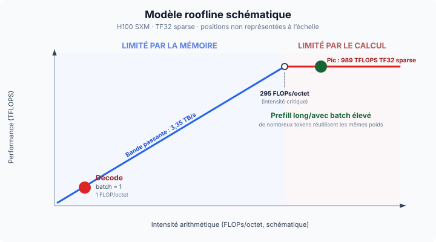
Les deux phases de l’inférence LLM se situent de part et d’autre de ce seuil :
- Le decode est memory-bound. Générer les tokens un par un signifie charger depuis la mémoire l’intégralité de la matrice de poids, de plusieurs Go, pour la multiplier par un seul nouveau token. En précision 16 bits (2 octets par paramètre), cela fait exactement 1 FLOP/octet, soit presque 300x sous le seuil du H100. Les unités de calcul restent inactives plus de 99 % du temps à attendre la mémoire.
- Le prefill est compute-bound. Le traitement du prompt d’entrée charge les poids une fois, mais les multiplie par des centaines ou des milliers de tokens simultanément. L’intensité monte bien au-dessus de 295 et sature les unités de calcul.
Donc, pour accélérer le decode, travaillez sur la bande passante mémoire : réduisez les poids avec la quantization, réduisez le surcoût mémoire KV avec GQA et PagedAttention, et augmentez l’intensité avec le batching. Pour accélérer le prefill, travaillez sur le calcul brut : GPUs plus rapides, calcul FP8.
2. Hiérarchie mémoire GPU
Un GPU a quatre couches mémoire, organisées comme une pyramide : une mémoire principale grande mais lente (HBM) en bas, et de minuscules registres très rapides en haut. Le déplacement des données dans cette pyramide est le principal goulot d’étranglement. Le point le plus dur se situe entre HBM et SRAM, où la SRAM est environ 10x plus rapide.
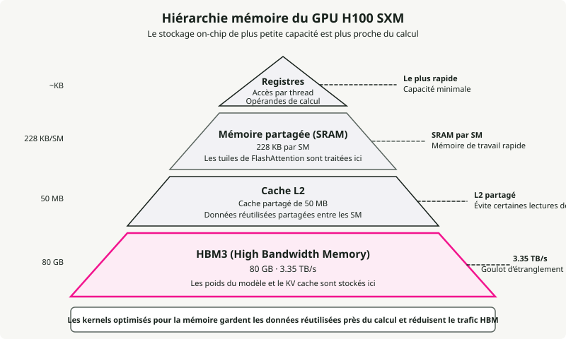
De la plus rapide à la plus lente sur un H100 :
- Registres — la mémoire la plus rapide, attachée directement aux threads de traitement. C’est là que le calcul s’exécute réellement ; les données doivent y être chargées pour que les Tensor Cores puissent les utiliser.
- SRAM (Shared Memory) — la mémoire de travail à environ 33 TB/s.
- L2 Cache — une couche intermédiaire (50 MB) autour de 12 TB/s. Elle sert de tampon pour que, lorsque plusieurs SM ont besoin des mêmes poids, ils n’aient pas tous à les relire depuis la HBM.
- HBM3 — la mémoire principale de 80 GB qui contient les poids du modèle et le cache KV, à ~3.35 TB/s.
La plupart des astuces logicielles de ce guide (FlashAttention, kernel fusion, PagedAttention) existent pour garder les données en SRAM le plus longtemps possible et éviter le retour vers la HBM, 10x plus lent.
3. Glossaire matériel GPU
Les termes ci-dessous reviennent dans tout le reste du guide.
HBM (High Bandwidth Memory) — empilement de dies DRAM connectés via des through-silicon vias (TSV), montés dans le package à côté du die GPU. Générations : HBM2e (A100, 2 TB/s), HBM3 (H100, 3.35 TB/s), HBM3e (H200/B200, 4.8–8 TB/s). Pourquoi c’est important pour les LLM : le decode est limité par la bande passante mémoire, donc la bande passante HBM détermine directement le TPOT.
GDDR (Graphics DDR) — mémoire graphique traditionnelle (GDDR6, GDDR6X) utilisée dans les GPUs grand public (RTX 4090, L40S). Bande passante inférieure à la HBM, mais moins chère par GB. La GDDR6X de la RTX 4090 délivre ~1 TB/s contre 3.35 TB/s pour la HBM3 du H100.
SM (Streaming Multiprocessor) — bloc de calcul de base des GPUs NVIDIA. Chaque SM contient des CUDA cores, des Tensor Cores, de la mémoire partagée (SRAM) et un ordonnanceur de warps. Le H100 possède 132 SMs ; l’A100 en a 108.
Tensor Cores — unités spécialisées de multiplication-accumulation matricielle dans chaque SM. Elles accélèrent les matmuls en mixed precision (FP16, BF16, FP8, INT8) qui dominent le calcul des transformers. Les Tensor Cores du H100 délivrent 989 TFLOPS en TF32 contre ~67 TFLOPS pour les seuls CUDA cores.
CUDA Cores — unités généralistes en virgule flottante et entiers. Elles gèrent les opérations élément par élément, les fonctions d’activation et tout le travail non-matmul. Les Tensor Cores assurent l’essentiel du travail pour les LLMs ; les CUDA cores gèrent le reste.
Warp — groupe de 32 threads exécutés en lockstep sur un SM. Plus petite unité d’ordonnancement sur les GPUs NVIDIA. La warp specialization assigne différents warps à différentes tâches (chargement des données vs calcul) pour mettre en place un pipeline.
NVLink — interconnexion GPU-à-GPU haut débit à l’intérieur d’un nœud. NVLink 4.0 (H100) fournit 900 GB/s bidirectionnels ; NVLink 5.0 (B200) atteint 1.8 TB/s. Indispensable pour le tensor parallelism, où les GPUs doivent échanger des activations à chaque couche.
InfiniBand — fabric réseau haut débit pour la communication GPU inter-nœuds. NVIDIA ConnectX-7 délivre 400 Gb/s par port. Utilisé pour le pipeline parallelism et l’entraînement distribué sur plusieurs nœuds.
RDMA (Remote Direct Memory Access) — permet à un GPU de lire/écrire la mémoire d’une autre machine sans passer par le CPU, pour minimiser la latence. GPUDirect RDMA permet des transferts GPU-à-GPU directs entre nœuds. Utilisé en serving désagrégé pour les transferts de cache KV.
NVMe (Non-Volatile Memory Express) — interface SSD haut débit utilisée pour l’offloading du cache KV et l’offloading de paramètres ZeRO-Infinity quand la mémoire GPU/CPU est insuffisante. Vitesses de lecture séquentielle de 5–7 GB/s par disque (PCIe Gen 4), les disques Gen 5 plus récents atteignant 10–14 GB/s.
TFLOPS / PFLOPS — Tera/Peta opérations en virgule flottante par seconde. 1 TFLOPS = 10¹² FLOPS. Unité standard pour mesurer le débit de calcul GPU. H100 délivre 989 TFLOPS (TF32) ; FlashAttention-3 atteint ~1.2 PFLOPS en FP8.
Partie II — Fondamentaux de l’inférence
L’inférence est la partie du système que les utilisateurs ressentent réellement. Entre eux, la latence, le cache KV, le modèle d’exécution en deux phases, l’attention et la quantization déterminent la vitesse, le coût et la fiabilité du serving.
4. Latence : TTFT, TPOT et percentiles
Time to First Token (TTFT) est le délai entre la soumission d’une requête et le premier token de sortie. Il est déterminé par la phase de prefill : le modèle doit traiter tout le prompt avant de générer quoi que ce soit, donc les prompts plus longs impliquent un TTFT plus élevé. Les cibles de production vont de <100 ms pour la complétion de code à <500 ms pour les chatbots. MLPerf Inference v5.0 fixe le TTFT P99 à \(\\leq\) 450 ms pour Llama 2 70B.
Time Per Output Token (TPOT) est l’intervalle moyen entre deux tokens consécutifs après le premier. Il correspond à la phase de decode, où chaque étape est memory-bandwidth-bound :
La vitesse moyenne de lecture silencieuse humaine est d’environ 250 ms par mot (~5 tokens/s) (Brysbaert, 2019), mais les systèmes visent des débits bien plus rapides pour que les utilisateurs n’aient jamais à attendre l’apparition du texte. Le seuil pour un streaming perçu comme fluide est d’environ 25 ms par token (~40 tokens/s). MLPerf fixe le TPOT P99 à \(\\leq\) 40 ms pour les charges interactives.
P50 vs P99 latency est importante parce que la médiane masque l’expérience en pire cas. P99 correspond au 1 % de requêtes les plus lentes, là où se trouvent les plaintes utilisateurs et les violations de SLA. Un système avec un bon P50 et un mauvais P99 a un problème de batching, de préemption ou de profondeur de file.
5. Throughput : tokens par seconde et arbitrage avec la latence
Le throughput se mesure en tokens de sortie par seconde sur l’ensemble des requêtes concurrentes. Les requêtes par seconde sont une métrique plus faible, car une réponse de 10 tokens et une réponse de 1 000 tokens ont des coûts très différents. Ordres de grandeur typiques : Llama 3.1 8B sur un H100 unique atteint 5,000–11,000 tokens de sortie/s à batch élevé (vLLM Benchmarks, 2024) ; Llama 3 70B FP8 sur 4×H100 tombe dans le même ordre de grandeur avec vLLM, SGLang et TensorRT-LLM.
L’arbitrage : à faible concurrence, chaque requête a une excellente latence, mais le GPU est sous-utilisé. Augmenter la taille de batch fait presque croître le throughput linéairement jusqu’à saturation du calcul, après quoi la latence monte brutalement. Goodput, la fraction des requêtes qui respectent vos SLO, est la métrique qui relie le throughput brut à la satisfaction réelle des utilisateurs.
6. Cache KV : le goulot d’étranglement derrière la plupart des autres
Pendant la génération autoregressive, chaque nouveau token porte attention à tous les tokens précédents. Le cache KV stocke les projections Key et Value de chaque token à chaque couche pour éviter une recomputation en \(O(n^2)\). Sans lui, générer le token \(n\) nécessiterait de repasser le modèle sur les \(n-1\) tokens précédents.
Le cache KV est généralement la pression mémoire dominante car il croît linéairement avec la longueur de séquence, la taille de batch et le nombre de couches :
où :
- \(L\) = nombre de couches
- \(h_{kv}\) = nombre de têtes KV
- \(d_h\) = dimension de tête
- \(s\) = longueur de séquence
- \(B\) = taille de batch
Exemples concrets avec FP16 et batch size 1 : Llama 3 8B à 8,192 tokens utilise ~1.0 GB de cache KV ; à 128K tokens, 16 GB. Llama 3 70B à 128K tokens a besoin d’environ ~40 GB pour une seule séquence, soit la moitié de la VRAM d’un H100. Aux batch sizes de production, le cache KV dépasse facilement la mémoire occupée par les poids du modèle. Les implémentations naïves gaspillent 60–80 % de la mémoire KV allouée à cause de la fragmentation, ce qui est précisément le problème que PagedAttention a été conçu pour résoudre.
Les principales optimisations sont GQA (moins de têtes KV), la quantization du cache KV (FP8/INT8), PagedAttention (allocation par blocs avec <4 % de perte), et l’offloading du cache KV vers CPU ou NVMe.
7. Prefill vs Decode : deux phases, deux goulots d’étranglement
La phase de prefill traite tout le prompt d’entrée en parallèle et remplit le cache KV. Elle est compute-bound : de grandes multiplications matricielles saturent complètement les Tensor Cores, et c’est ce qui détermine le TTFT. La phase de decode génère un token à la fois, chaque étape lisant tous les poids du modèle et le cache KV depuis la HBM pour produire un seul token. Elle est memory-bandwidth-bound : les unités de calcul attendent surtout les données, et cela détermine le TPOT.
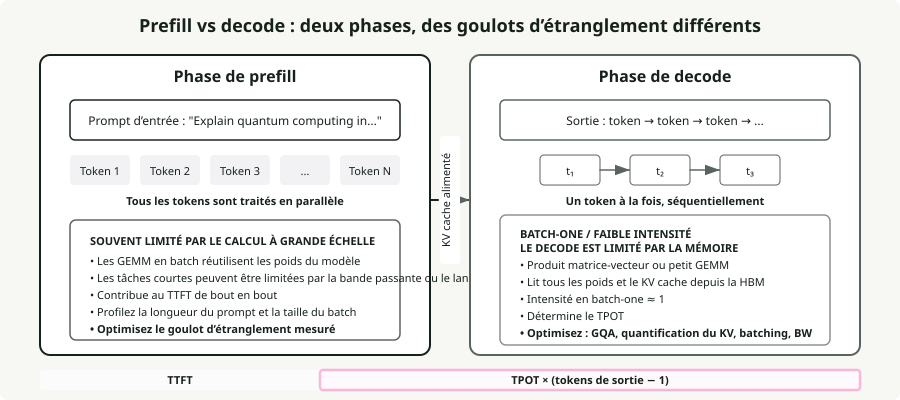
Le chunked prefill découpe le prompt en blocs de taille fixe (par exemple 512 tokens) au lieu de tout traiter d’un coup. Un long prefill ne bloque plus les requêtes de decode en cours, le travail compute-bound et memory-bound est co-ordonnancé sur le même GPU, et les benchmarks vLLM montrent +50 % de throughput (Agrawal et al., 2024). Le coût est un TTFT légèrement plus élevé pour la nouvelle requête.
Un schéma plus récent appelé serving désagrégé (introduit par Splitwise et DistServe, désormais utilisé par Perplexity et NVIDIA Dynamo) sépare physiquement prefill et decode dans des pools GPU distincts, chacun optimisé pour son goulot d’étranglement. Les transferts de cache KV entre pools se font via RDMA.
8. GQA et MQA : réduire le cache KV
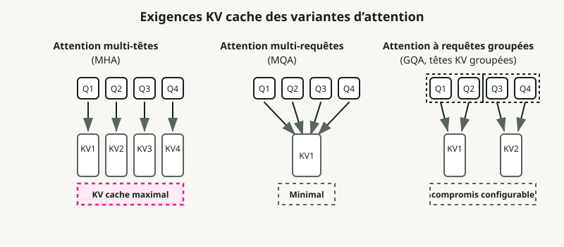
L’attention multi-tête standard (MHA) donne à chaque tête de requête sa propre tête K et V. Multi-Query Attention (MQA) partage une seule tête KV entre toutes les têtes de requête, ce qui constitue une réduction extrême. Grouped-Query Attention (GQA) est le compromis pratique : des groupes de têtes de requête partagent une tête KV.
Llama 3 70B utilise 64 têtes de requête mais seulement 8 têtes KV, soit une réduction 8x du cache KV par rapport à MHA. Llama 3.1 405B pousse cela à 128 têtes de requête avec 8 têtes KV pour une réduction 16x (Meta, 2024). GQA conserve une qualité au niveau de MHA (à ~1 % près sur les benchmarks) tout en s’approchant de la vitesse de MQA (Ainslie et al., 2023). Un cache KV plus petit signifie des batches plus grands, un throughput plus élevé et une latence de decode par token plus faible.
9. Quantization : échanger des bits contre vitesse et mémoire
La quantization réduit la précision des poids du modèle et/ou des activations. Les arbitrages de base :
| Format | Bits | Mémoire (modèle 7B) | Impact qualité |
|---|---|---|---|
| FP16/BF16 | 16 | ~14 GB | Référence |
| FP8 | 8 | ~7 GB | Essentiellement sans perte sur Hopper (H100) |
| INT8 | 8 | ~7 GB | Dégradation de 1–3 % avec ajustement |
| INT4 | 4 | ~3.5 GB | Stable pour 70B+, risqué pour petits modèles |
AWQ (Activation-Aware Weight Quantization) repère le <1 % de poids saillants en observant l’amplitude des activations et applique un scaling par canal pour les protéger. Il ne nécessite que 128–1,024 tokens de calibration et a reçu le prix du meilleur article MLSys 2024. GPTQ utilise l’information hessienne du second ordre pour une quantization couche par couche ; c’est meilleur sur les benchmarks de code mais demande plus de données de calibration. bitsandbytes (bibliothèque de Tim Dettmers) quantize à la volée lors du chargement du modèle, sans coût de prétraitement ; son format NF4 alimente le fine-tuning QLoRA. FP8 sur H100/H200 devient le défaut de production : quasi sans perte avec une réduction mémoire de 2x.
Point important : le kernel compte souvent plus que l’algorithme de quantization. Les mêmes poids quantifiés servis via des kernels différents peuvent montrer une différence de throughput de 2.6x uniquement à cause de leur efficacité d’utilisation du GPU (Section 10).
Partie III — Optimisations de l’inférence
Cette partie couvre les techniques logicielles qui transforment un système d’inférence fonctionnel en système rapide. Chacune cible un goulot spécifique : FlashAttention exploite l’écart SRAM-HBM, PagedAttention supprime la fragmentation du cache KV, continuous batching garde le GPU occupé.
10. CUDA Kernels et kernel fusion
Un CUDA kernel est une fonction écrite pour le GPU qui s’exécute en parallèle sur des milliers de threads. Quand le CPU appelle un kernel, le GPU répartit le travail sur ses SMs : chaque SM exécute plusieurs warps de 32 threads, et chaque thread traite une tranche des données. Toute opération en inférence LLM, de la multiplication matricielle à l’échantillonnage de tokens, se termine en lancement de kernel. Une seule forward pass sur un modèle 70B déclenche des centaines à des milliers de lancements de kernels, et l’écart entre un kernel naïf et un kernel optimisé peut décider si votre système respecte son SLO de latence.
Les principales catégories de kernels en serving LLM :
- Kernels GEMM pour la multiplication matricielle, qui domine le calcul en prefill comme en decode.
- Kernels d’attention comme FlashAttention, qui tuile les calculs pour rester en SRAM au lieu de déborder en HBM.
- Fused kernels qui regroupent plusieurs opérations (comme add + layer norm ou projection QKV) en un seul lancement pour éviter les allers-retours intermédiaires vers la HBM.
- Sampling kernels qui convertissent les logits en IDs de tokens via l’échantillonnage top-k, top-p ou temperature.
La qualité du kernel compte souvent plus que l’algorithme de quantization. Les mêmes poids quantifiés en INT4 servis via Marlin (un kernel optimisé FP16xINT4) atteignent 712 tokens/s contre 276 tokens/s pour GPTQ vanilla, soit une différence de throughput de 2.6x uniquement grâce à une meilleure utilisation du GPU. Marlin y parvient grâce au prefetch mémoire asynchrone et à des files en mémoire partagée qui alimentent les Tensor Cores au lieu de les laisser attendre la HBM. Triton abaisse la barrière à l’écriture de kernels personnalisés en exposant la programmation GPU via Python plutôt que via CUDA C++ brut, ce qui rend l’optimisation au niveau kernel accessible aux ingénieurs ML et pas seulement aux spécialistes GPU. La plupart des optimisations décrites plus loin dans cette partie (FlashAttention, fused kernels, PagedAttention) sont au fond soit de meilleurs kernels, soit de meilleures façons d’orchestrer les lancements de kernels.
Le kernel fusion combine plusieurs opérations séquentielles dans un seul kernel GPU et évite les écritures intermédiaires en HBM. Fusions courantes : projection QKV (un matmul au lieu de trois), attention + softmax (FlashAttention lui-même), add + RMSNorm (FlashNorm), et activation SwiGLU (DeepFusionKernel). Triton rend ces fused kernels pratiques à écrire en Python. Sans fusion, un modèle 70B a des milliers de lancements de kernels par token à ~30 % d’utilisation GPU. Avec fusion, les couches se réduisent à 1–2 kernels optimisés à 80–90 % d’utilisation.
11. FlashAttention : tuiler l’attention pour rester en SRAM
L’attention standard matérialise la matrice d’attention complète \(N \times N\) en HBM, ce qui coûte une mémoire en \(O(N^2)\) et génère beaucoup de trafic mémoire. L’idée derrière FlashAttention est de ne jamais matérialiser cette matrice. Il découpe les matrices Q, K, V en blocs qui tiennent en SRAM, calcule l’attention partielle à l’intérieur de chaque tuile, puis fusionne les résultats via un online softmax (suivi incrémental du max courant et de la somme à travers les blocs). La mémoire passe de \(O(N^2)\) à \(O(N)\), et les lectures HBM baissent d’un ordre de grandeur.
Chaque version cible le goulot d’étranglement de sa génération de GPU :
- FlashAttention v1 (A100, 2022) a montré que l’idée tuile + online-softmax fonctionne. 2–4x d’accélération par rapport à l’attention standard, mais seulement 25–40 % d’utilisation GPU car l’ordonnancement des kernels laissait beaucoup de SM inactifs.
- FlashAttention v2 (A100, 2023) a revu le parallélisme pour découper selon la dimension séquence plutôt que batch et têtes. Il a atteint 50–73 % d’utilisation sur A100, soit environ 2x plus rapide que v1.
- FlashAttention v3 (H100 Hopper, 2024) a ajouté la warp specialization (warps séparés pour le mouvement des données vs les calculs) et le pipelining GEMM-softmax pour recouvrir chargements mémoire et calcul. 75–85 % d’utilisation sur H100 et jusqu’à ~1.2 PFLOPS en FP8. Spotlight NeurIPS 2024.
- FlashAttention v4 (B200 Blackwell, 2026) traite un nouveau goulot : sur Blackwell, le débit des Tensor Cores augmente tellement vite que les opérations non-matmul (exponentielles du softmax, rescaling) deviennent limitantes. FA4 émule en logiciel l’exponentielle avec des approximations polynomiales sur unités FMA, utilise un rescaling conditionnel pour réduire le surcoût, et stocke les intermédiaires dans la mémoire tensorielle dédiée de Blackwell (TMEM) plutôt que dans les registres. Résultat : 1,605 TFLOPS/s sur B200 en BF16, 1.3x plus rapide que cuDNN 9.13 et 2.7x plus rapide que Triton.
Chaque génération a buté sur un mur matériel différent, et chaque version de FlashAttention a été repensée depuis le kernel pour y répondre.
12. FlashDecoding : paralléliser le goulot du decode
FlashAttention standard garde le GPU occupé en répartissant le travail selon la taille de batch et la longueur de requête. Pendant le decode, le modèle génère exactement 1 token à la fois (longueur de requête = 1). Si la taille de batch multipliée par le nombre de têtes d’attention est inférieure au nombre total de SM du GPU (108 sur un A100), la majeure partie du GPU reste inactive pendant qu’un petit nombre d’unités parcourt séquentiellement l’historique des tokens.
FlashDecoding résout cela en ajoutant une nouvelle dimension de parallélisation : la longueur de séquence KV elle-même. Il découpe le cache KV en plus petits morceaux et les distribue à tous les processeurs GPU autrement inactifs pour les évaluer en parallèle, puis fusionne leurs calculs partiels via une réduction log-sum-exp.
Résultat : jusqu’à 8x d’accélération end-to-end du decode sur les longues séquences (contexte 64K) et un temps de decode par token à peu près constant. Générer le token 60,000 reste presque aussi rapide que générer le token 100.
13. Continuous batching vs static batching
Le static batching attend que chaque séquence d’un batch soit terminée avant de démarrer le suivant, si bien que les séquences courtes gaspillent des cycles GPU en restant inactives après avoir atteint end-of-sequence. Le continuous batching (introduit par l’article Orca, OSDI 2022) opère à la granularité de l’itération : à chaque étape de decode, les séquences terminées sont retirées et de nouvelles séquences sont insérées.
Les ordres de grandeur sont élevés. Les benchmarks d’Anyscale sur OPT-13B montrent un static batching optimisé à 4x par rapport au naïf, continuous batching à 8x, et vLLM avec continuous batching + PagedAttention à 23x par rapport au naïf (Anyscale, 2023). Le revers : continuous batching amplifie la fragmentation du cache KV. Plus de séquences concurrentes signifient plus d’allocations mémoire éparses, ce qui est précisément le problème que PagedAttention a été conçu pour résoudre.
14. PagedAttention : mémoire virtuelle pour le cache KV
Le PagedAttention de vLLM applique l’idée de la mémoire virtuelle des OS à la gestion du cache KV. Le cache KV est découpé en blocs de taille fixe (typiquement 16 tokens), les blocs sont alloués à la demande à mesure que les tokens sont générés, et les positions logiques (séquentielles) sont mappées vers des emplacements mémoire physiques (dispersés) via des tables de blocs. Plusieurs requêtes partageant un préfixe (system prompts, beam search) peuvent pointer vers les mêmes blocs physiques.
Les systèmes antérieurs gaspillaient 60–80 % de la mémoire du cache KV à cause de la fragmentation et de la pré-allocation. PagedAttention ramène cela à <4 %, ce qui permet au throughput de monter de 2–4x à latence égale, et jusqu’à 24x par rapport à HuggingFace Transformers (vLLM Blog, 2023).
15. Speculative decoding : plusieurs tokens par forward pass
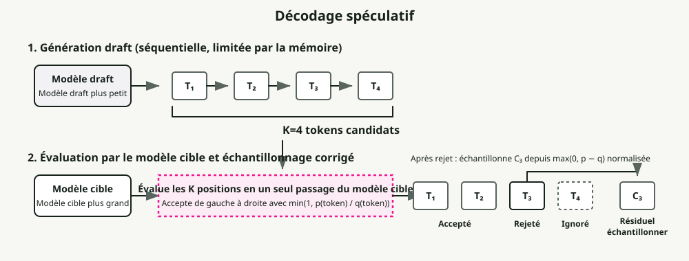
Un petit draft model génère \(K\) tokens candidats, puis le grand target model vérifie les \(K\) tokens en une seule forward pass. Les tokens corrects sont acceptés ; le premier incorrect est rejeté. La qualité de sortie est mathématiquement identique à celle du target model seul, donc c’est une accélération sans perte.
Cela fonctionne parce que le decode LLM est limité par la bande passante mémoire : vérifier \(K\) tokens coûte à peu près autant qu’en générer 1, puisque dans les deux cas on charge tous les poids du modèle une fois. Les accélérations typiques se situent entre 1.5x et 3x, avec des méthodes comme EAGLE-3 qui atteignent jusqu’à 6.5x. Variantes : Medusa (têtes de prédiction supplémentaires, sans modèle séparé), prompt lookup decoding (matching n-gram contre l’entrée, gratuit), et EAGLE (extrapolation au niveau des features).
Le revers est la concurrence : à batch élevé, le calcul supplémentaire de draft et de vérification peut provoquer un ralentissement de 1.4–1.8x. Speculative decoding aide surtout à faible batch size et sur les tâches où le taux d’acceptation du draft est élevé (résumé, QA).
16. Prefix caching et réutilisation du cache KV
Au lieu de jeter le cache KV quand une requête se termine, le prefix caching le conserve pour le réutiliser sur de nouvelles requêtes partageant les mêmes tokens de préfixe. Cela réduit le prefill redondant pour les system prompts, les few-shot examples, le contexte RAG et l’historique de conversation multi-tour.
L’Automatic Prefix Caching de vLLM hash chaque bloc KV et utilise une table de hash globale pour la recherche, avec des taux de hit de 87 %+ sur des prompts bien structurés. Le RadixAttention de SGLang maintient un arbre radix de tous les tenseurs KV mis en cache avec une granularité au niveau token et une détection automatique des opportunités de cache, atteignant jusqu’à 5x d’amélioration de throughput.
17. Streaming en pratique
Le streaming envoie les tokens au client à mesure qu’ils sont générés au lieu d’attendre la réponse complète. La plupart des frameworks de serving l’exposent via Server-Sent Events : le client ouvre une connexion HTTP longue durée, et le serveur pousse chaque token (ou petit batch de tokens) comme un événement data:. Le TTFT détermine quand l’utilisateur voit le premier résultat ; le TPOT détermine la fluidité perçue. Cible : TPOT < 25 ms pour un streaming fluide (~40 tokens/s).
Côté client, le streaming force des choix de buffering. Rendre token par token peut provoquer du jitter visuel, surtout avec du markdown ou des blocs de code qui nécessitent plusieurs tokens pour être formatés correctement. Les schémas courants sont le buffering au niveau mot (accumuler les tokens jusqu’à un espace), le buffering au niveau ligne (attendre un saut de ligne avant d’afficher), et le buffering adaptatif (rendu immédiat pour la prose, buffering pour les blocs de code). Le paramètre stream_options: {"include_usage": true} dans les APIs compatibles OpenAI renvoie les comptes de tokens dans l’événement SSE final, ce qui permet un suivi précis des coûts pour les réponses streamées.
Le chunked prefill est ce qui permet au streaming de tenir sous charge. Sans lui, un seul long prefill peut bloquer la livraison des tokens pour tous les autres utilisateurs concurrents.
Partie IV — Architecture du modèle
Comment les LLMs sont construits : bloc transformer, tokenization, gestion du contexte, et variantes architecturales devenues standard. Ces éléments sous-tendent l’inférence comme l’entraînement.
18. Fondamentaux de l’architecture Transformer
Un transformer moderne decoder-only (GPT, Llama) est un empilement de couches identiques, chacune avec deux sous-blocs : attention et feed-forward. Chaque sous-bloc est encapsulé avec une connexion résiduelle et une normalisation. Les composants clés :
Multi-Head Attention — le mécanisme qui permet à chaque token de regarder tous les autres tokens pour décider de ce qui est pertinent. L’entrée est projetée en trois matrices : Queries (que suis-je en train de chercher ?), Keys (que contiens-je ?), et Values (quelle information est-ce que je porte ?). Les scores d’attention sont ensuite calculés comme suit :
Le produit scalaire \(QK^T\) mesure la similarité entre chaque paire de tokens. La division par \(\\sqrt{d_k}\) évite que les produits scalaires ne deviennent trop grands (ce qui pousserait softmax dans des zones à gradients évanescents). Le softmax convertit les scores en probabilités, et la multiplication par \(V\) produit une combinaison pondérée des vecteurs de valeurs. Exécuter cela en parallèle sur plusieurs têtes permet au modèle de prêter attention à des relations différentes en même temps (une tête pour la syntaxe, une autre pour la coréférence, etc.).
Feed-Forward Network (FFN) — une fois que l’attention a décidé quels tokens sont pertinents, le FFN décide quoi faire avec cette information. Les LLMs modernes utilisent SwiGLU au lieu du FFN ReLU original à deux matrices :
SwiGLU utilise trois matrices de poids au lieu de deux et une activation Swish lisse au lieu de ReLU. Cela ajoute environ 50 % de paramètres au FFN mais améliore suffisamment la qualité pour que toutes les grandes familles de modèles (Llama, Mistral, Qwen, Gemma) l’aient adopté. Le FFN représente en général environ deux tiers du total des paramètres du modèle.
Residual Connections — chaque sous-bloc ajoute sa sortie à son entrée : \(\\text{Output} = \\text{Input} + \\text{Sublayer}(\\text{Input})\). Sans cette skip connection, les gradients s’évanouissent lors de la backpropagation à travers 80–128 couches. La résiduelle crée un chemin qui laisse circuler directement information et gradients des premières couches aux dernières.
RMSNorm — a remplacé LayerNorm dans pratiquement tous les LLMs modernes. LayerNorm normalise en recentrant (soustraction de la moyenne) et en remettant à l’échelle (division par l’écart-type). RMSNorm supprime la soustraction de la moyenne et ne fait qu’un rescaling, ce qui divise par deux les paramètres appris et est 7–64 % plus rapide sans perte de qualité. Le placement pre-norm (normalisation avant attention/FFN plutôt qu’après) est désormais standard car il fournit des gradients plus stables sans warmup soigné du learning rate.
Estimation du nombre de paramètres pour un modèle decoder-only :
où \(V\) = taille du vocabulaire, \(d\) = dimension cachée, \(L\) = nombre de couches. Le terme \(V \times d\) est la matrice d’embedding ; le terme \(12 \times d^2\) par couche couvre les projections d’attention (Q, K, V, output = \(4d^2\)) et le FFN SwiGLU (\(8d^2\) avec la taille intermédiaire typique \(\\frac{8}{3}d\)). Pour Llama 3 8B (\(V\)=128,256, \(d\)=4,096, \(L\)=32) : \(128{,}256 \times 4{,}096 + 12 \times 32 \times 4{,}096^2 \approx 7.0B + 0.5B \approx 7.5B\) paramètres (réel : 8.03B avec tied embeddings et ajustements GQA).
19. Pourquoi les architectures decoder-only dominent
Le Transformer original (2017) avait à la fois un encodeur et un décodeur. Depuis, le domaine s’est scindé en trois familles architecturales, et l’une d’elles est devenue la valeur par défaut pour l’IA générative.
Les modèles encoder-only (BERT, RoBERTa) utilisent une attention bidirectionnelle : chaque token prête attention à tous les autres tokens dans les deux sens. Cela produit de riches représentations pour les tâches de compréhension (classification, NER, similarité sémantique) mais ne permet pas de générer du texte de façon autoregressive. Les modèles encoder-only dominent encore comme base des embedding models, des rerankers et des classifieurs légers (par exemple les routeurs basés sur BERT dans RouteLLM).
Les modèles encoder-decoder (T5, BART, le Transformer original) séparent compréhension et génération. L’encodeur traite l’entrée complète avec une attention bidirectionnelle, puis le décodeur génère la sortie de façon autoregressive tout en portant attention aux représentations de l’encodeur via la cross-attention. Cela avait un avantage naturel pour les tâches de séquence à séquence comme la traduction, où entrée et sortie sont fondamentalement deux séquences différentes. Le T5 de Google a montré que toute tâche NLP pouvait être formulée en text-to-text, et les modèles encoder-decoder alimentent encore certains systèmes spécialisés (Whisper pour la reconnaissance vocale, FLAN-T5 pour l’instruction following).
Les modèles decoder-only (GPT, Llama, Mistral, Gemini) utilisent une attention causale (unidirectionnelle) : chaque token ne prête attention qu’aux tokens précédents. Ils formulent tout comme une prédiction du token suivant : « l’entrée » est le début de la séquence, et « la sortie » sa continuation. Quatre raisons expliquent la domination de cette architecture :
-
Efficacité du cache KV. Le cache KV des tokens précédents reste valide quand de nouveaux tokens sont générés, donc il n’est jamais jeté ni recalculé. Les modèles encoder-decoder doivent maintenir deux caches d’attention distincts (self-attention plus cross-attention sur la sortie de l’encodeur), ce qui ajoute surcoût mémoire et complexité architecturale.
-
Simplicité d’entraînement. L’objectif d’entraînement est une simple prédiction du token suivant sur du texte brut. Pas besoin de données appariées entrée-sortie (comme en traduction) ni de reconstruction de tokens masqués (comme BERT). On peut entraîner sur pratiquement n’importe quel texte venant d’Internet, de livres et de code sans prétraitement spécial, ce qui est un énorme avantage quand on passe à l’échelle de trillions de tokens.
-
Simplicité architecturale. Un seul module gère tout : le même bloc transformer répété \(L\) fois. Pas de couches de cross-attention encodeur-décodeur, pas de pile encodeur séparée. Cela rend les stratégies de parallélisme plus simples (Section 33) et réduit la surface d’ingénierie à optimiser. FlashAttention, quantization et speculative decoding n’ont qu’un seul schéma d’attention à cibler.
-
In-context learning. Les modèles decoder-only sont naturellement bons en few-shot learning parce que les exemples, les instructions et la requête ne sont tous que des tokens dans la même séquence. Le modèle ne distingue pas « entrée » de « sortie » ; il prédit le token suivant à partir de tout ce qui précède. GPT-3 a été la première démonstration à grande échelle de ce comportement, ce qui a fait des modèles decoder-only un bon choix pour le rôle d’assistant généraliste.
20. Mixture of Experts
Le MoE remplace le FFN dense de chaque couche transformer par plusieurs petits expert FFNs plus un gating router léger. Le routeur calcule un score pour chaque expert (généralement un softmax sur des projections linéaires apprises) et sélectionne les \(k\) meilleurs experts par token. Seuls les experts activés calculent, donc un modèle peut avoir une énorme capacité totale tout en gardant un coût par token faible. C’est du calcul conditionnel sparse : le total de paramètres détermine ce que le modèle peut représenter, les paramètres actifs déterminent ce qu’il coûte à exécuter.
| Modèle | Params totaux | Params actifs | Experts (routés + partagé) | Top-\(k\) |
|---|---|---|---|---|
| Mixtral 8x7B | 47B | ~13B | 8 + 0 | 2 |
| DeepSeek-V3 | 671B | 37B | 256 + 1 | 8 |
L’expert partagé dans DeepSeek-V3 est toujours activé pour chaque token. Il fournit une représentation de base sur laquelle les experts routés peuvent se spécialiser.
L’entraînement des MoE a ses propres difficultés. Load balancing : les tokens se concentrent sur quelques experts populaires et les autres sont sous-entraînés. Expert collapse : les experts convergent vers des représentations identiques, ce qui annule l’intérêt d’en avoir plusieurs. Et surcoût de communication pour l’Expert Parallelism. Les modèles MoE traditionnels ajoutent une loss auxiliaire pour pénaliser le routage déséquilibré, mais cette loss entre en concurrence avec l’objectif principal d’entraînement et dégrade la qualité. DeepSeek-V3 a traité cela avec des termes de biais sans loss auxiliaire : chaque expert a un biais ajouté à son score de gating, ajusté dynamiquement hors backpropagation, diminué pour les experts surchargés et augmenté pour les sous-chargés. Résultat : un routage équilibré sans compromis qualité.
21. Tokenization : BPE, SentencePiece et tiktoken
Les LLMs ne voient pas le texte. Ils voient des séquences d’identifiants entiers de tokens. Un tokenizer découpe le texte brut en tokens (sous-mots) et associe à chacun un ID. Le choix du tokenizer affecte la qualité du modèle, la vitesse d’inférence et l’équité multilingue.
Byte Pair Encoding (BPE) est l’algorithme le plus courant. Il fusionne itérativement les paires adjacentes les plus fréquentes dans le corpus d’entraînement. Exemple simplifié :
- Commencer avec un vocabulaire au niveau caractère :
[l, o, w, e, r, _] - La paire la plus fréquente est
(l, o)→ fusionner enlo→ vocabulaire :[l, o, w, e, r, _, lo] - La paire suivante la plus fréquente est
(lo, w)→ fusionner enlow→ le vocabulaire ajoutelow - Continuer jusqu’à ce que le vocabulaire atteigne la taille cible (par ex. 128K tokens)
Les mots fréquents comme "the" deviennent des tokens uniques, tandis que les mots rares comme "defenestration" sont découpés en sous-mots comme ["def", "en", "est", "ration"]. L’arbitrage se fait entre taille du vocabulaire et longueur des séquences.
Trois implémentations de tokenizer couvrent l’essentiel des usages en production :
- SentencePiece traite l’entrée comme un flux d’octets brut sans prétraitement spécifique à la langue (pas de pré-tokenization par espaces ou ponctuation), ce qui le rend agnostique à la langue et compte beaucoup pour les écritures non latines. Supporte BPE et unigram. Utilisé par Llama 1/2, T5 et Mistral.
- tiktoken est le tokenizer Rust d’OpenAI basé sur du byte-level BPE. Son cœur Rust compilé est 3–6x plus rapide que les alternatives basées sur Python. Llama 3 est passé de SentencePiece à l’algorithme de tiktoken.
- HuggingFace Tokenizers est la bibliothèque Rust supportant BPE, WordPiece et Unigram. C’est le standard de fait pour la distribution de modèles open-source.
Les tailles de vocabulaire ont augmenté régulièrement, avec des implications majeures pour l’efficacité :
| Modèle | Taille vocabulaire | Fertilité anglaise | Pourquoi c’est important |
|---|---|---|---|
| GPT-2 | 50,257 | ~1.3 tokens/mot | Référence BPE d’origine |
| Llama 2 | 32,000 | ~1.4 tokens/mot | Vocabulaire plus petit, séquences plus longues |
| GPT-4 | 100,256 | ~1.1 tokens/mot | Meilleure compression, moins de tokens/requête |
| Llama 3 | 128,256 | ~1.0 tokens/mot | 4x plus grand que Llama 2, gain multilingue majeur |
| GPT-4o | 200,000 | ~1.0 tokens/mot | Plus grand vocabulaire de production |
La fertilité (tokens par mot) mesure l’efficacité de compression. Plus c’est faible, mieux c’est : moins de tokens signifie des séquences plus courtes, un coût plus faible, et plus de contenu dans la fenêtre de contexte. L’anglais se situe typiquement autour de ~1.0–1.3 tokens/mot, mais les écritures non latines (chinois, japonais, coréen, arabe) peuvent être 2–4x plus élevées avec des vocabulaires centrés sur l’anglais. Le même contenu coûte donc 2–4x plus de tokens pour les utilisateurs non anglophones, un problème d’équité persistant que des vocabulaires plus grands et mieux équilibrés ne résolvent qu’en partie.
22. Fenêtres de contexte et encodages positionnels
La fenêtre de contexte est le nombre maximal de tokens qu’un modèle peut traiter dans une seule forward pass. Elle a beaucoup grandi :
| Modèle | Fenêtre de contexte | Année |
|---|---|---|
| Transformer original | 512 | 2017 |
| GPT-4 Turbo | 128K | 2023 |
| Claude 3.5 | 200K | 2024 |
| Gemini 1.5 Pro | 1M+ | 2024 |
| Grok 4 Fast | 2M | 2025 |
Il y a ici un problème de base : le mécanisme d’attention traite son entrée comme un ensemble, pas comme une séquence. Il n’a aucune notion intrinsèque de l’ordre des mots. Sans information positionnelle, "the cat sat on the mat" et "the mat sat on the cat" produiraient des représentations identiques. Les encodages positionnels injectent l’ordre pour que le modèle sache où se trouve chaque token.
Trois approches dominent :
- RoPE (Rotary Position Embeddings) encode la position de chaque token en faisant tourner ses vecteurs query et key selon un angle proportionnel à la position. Les tokens proches reçoivent des rotations similaires, donc leur produit scalaire (score d’attention) reste élevé. Les tokens éloignés reçoivent des rotations très différentes, ce qui encode la distance relative. RoPE est le standard de presque tous les LLMs ouverts modernes (Llama, Mistral, Qwen) car il gère bien les positions relatives et est peu coûteux en calcul.
- ALiBi (Attention with Linear Biases) évite de modifier les embeddings et ajoute directement une pénalité aux scores d’attention : plus deux tokens sont éloignés, plus le biais négatif est grand. Aucun paramètre appris, aucun calcul supplémentaire. Cela permet une certaine extrapolation au-delà de la longueur d’entraînement, mais la qualité se dégrade nettement à 2x+ du contexte d’entraînement.
- YaRN (Yet another RoPE extensioN) est actuellement la meilleure option pour étendre la fenêtre de contexte d’un modèle au-delà de ce sur quoi il a été entraîné. Il regroupe les dimensions fréquentielles de RoPE en trois catégories (haute fréquence : pas de scaling ; basse fréquence : scaling linéaire ; fréquence intermédiaire : interpolation) et applique un scaling différent à chacune. Résultat : extension de contexte avec 10x moins de tokens de fine-tuning et 2.5x moins d’étapes d’entraînement qu’une interpolation de position naïve.
Partie V — Entraînement et alignement
L’entraînement est l’endroit où les capacités sont construites. Cette partie couvre le pretraining, le fine-tuning efficace (LoRA, mixed precision), les scaling laws et les méthodes d’alignement.
23. Pretraining, fine-tuning et alignement
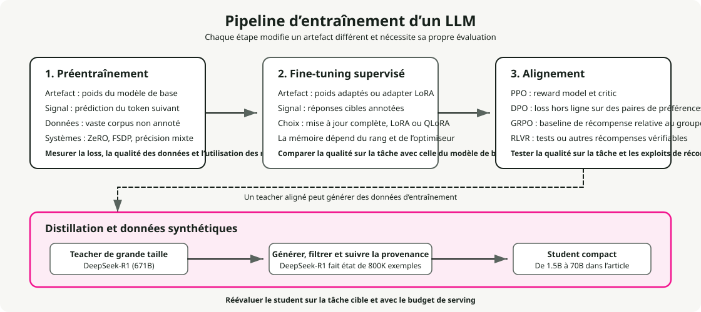
Le pretraining est une prédiction auto-supervisée du token suivant sur des trillions de tokens. Il construit une compréhension générale du langage et coûte \\(500K à \\\)100M+ : Llama 3 405B a utilisé \(3.8 \times 10^{25}\) FLOPs. Le supervised fine-tuning (SFT) adapte le modèle préentraîné à des tâches spécifiques avec des données annotées, pour quelques centaines à quelques milliers de dollars sur un seul GPU. RLHF / RLAIF enseigne des qualités subjectives comme l’utilité via l’apprentissage de préférences : collecte de comparaisons humaines, entraînement d’un reward model, puis fine-tuning avec RL (généralement PPO ou DPO). RLAIF remplace les annotateurs humains par un feedback IA (Constitutional AI).
Le calcul couvre environ six ordres de grandeur : pretraining à \(10^{24}\)–\(10^{26}\) FLOPs, SFT à \(10^{18}\)–\(10^{21}\), RLHF similaire au SFT mais avec 4 copies du modèle en mémoire pour PPO. J’ai couvert le cadre complet de décision en fine-tuning (quand faire du fine-tuning vs utiliser RAG vs prompt engineering) dans LLM Fine-Tuning Guide.
24. LoRA et QLoRA : fine-tuning efficace en paramètres
LoRA fige les poids préentraînés et injecte des matrices low-rank entraînables \(A\) (\(r \times k\)) et \(B\) (\(d \times r\)) de sorte que le poids mis à jour soit \(W_0 + BA\). L’idée est que les mises à jour de poids pendant le fine-tuning ont un rang intrinsèque faible. Cela réduit les paramètres entraînables d’un facteur 10,000x (GPT-3 175B passe de 175B à ~18M) et la mémoire GPU d’environ 3x. Rangs typiques : \(r\)=8–16 pour les tâches simples, \(r\)=64–128 pour les scénarios complexes. Les adapters LoRA peuvent être fusionnés après entraînement pour un coût d’inférence nul.
QLoRA charge le modèle de base en quantization NF4 4 bits tout en entraînant les adapters LoRA en BF16. NormalFloat4 place plus de niveaux de quantization près de zéro, là où la densité des poids est la plus forte. QLoRA permet de faire le fine-tuning d’un modèle 65B sur un seul GPU de 48GB avec des performances à peine distinguables d’un fine-tuning complet 16 bits. Le compromis est un temps d’entraînement 39 % plus long pour 33 % d’économie mémoire GPU par rapport au LoRA standard.
25. Entraînement en mixed precision
Chaque format en virgule flottante répartit ses bits entre trois champs : signe (toujours 1 bit), exposant (définit la plage dynamique), et mantisse (définit la précision). Plus il y a de bits d’exposant, plus la plage des magnitudes représentables est large ; plus il y a de bits de mantisse, plus la distinction entre valeurs proches est fine. Les formats entiers n’ont pas d’exposant du tout et ne représentent que des entiers régulièrement espacés dans une plage fixe.
| Format | Bits | Layout (S / E / M) | Plage | Précision | Meilleur usage |
|---|---|---|---|---|---|
| FP32 | 32 | 1 / 8 / 23 | \(\\pm 3.4 \times 10^{38}\) | ~7 chiffres décimaux | Poids maîtres, états optimiseur (momentum & variance d’Adam) |
| BF16 | 16 | 1 / 8 / 7 | \(\\pm 3.4 \times 10^{38}\) | ~2 chiffres décimaux | Format d’entraînement préféré — même plage que FP32, pas de loss scaling nécessaire |
| FP16 | 16 | 1 / 5 / 10 | \(\\pm 65{,}504\) | ~3 chiffres décimaux | Entraînement avec loss scaling (anciens GPUs) ; inférence sur matériel pré-Hopper |
| FP8 E4M3 | 8 | 1 / 4 / 3 | \(\\pm 448\) | ~1 chiffre décimal | Forward pass sur Hopper (H100) — plus de précision pour poids & activations |
| FP8 E5M2 | 8 | 1 / 5 / 2 | \(\\pm 57{,}344\) | ~0.6 chiffre décimal | Backward pass sur Hopper — plage plus large pour les gradients |
| INT8 | 8 | point fixe | \(-128\) à \(127\) | Entiers exacts | Quantization post-entraînement des poids pour l’inférence (W8A8) ; quantization du cache KV |
| INT4 | 4 | point fixe | \(-8\) à \(7\) | Entiers exacts | Quantization agressive weight-only (AWQ, GPTQ) pour l’inférence sur matériel contraint |
BF16 a la même plage que FP32 parce que la plage est définie par le champ exposant, et BF16 conserve les 8 bits d’exposant de FP32. Il sacrifie à la place des bits de mantisse (7 contre 23), troquant précision contre réduction mémoire 2x tout en évitant les problèmes d’overflow et d’underflow qui affectent l’entraînement en FP16. FP16 n’a que 5 bits d’exposant, ce qui plafonne sa plage autour de ~65K. Les gradients dépassent régulièrement cette valeur, d’où le besoin de loss scaling en FP16 : multiplier la loss par une grande constante avant la backprop, puis diviser les gradients ensuite. BF16 rend le loss scaling inutile.
Les formats entiers sont absents de l’entraînement parce que la quantization entière n’a pas de plage dynamique et ne peut pas représenter la large dispersion des magnitudes de gradients pendant la backpropagation. Ils fonctionnent bien pour l’inférence, où les poids sont figés et peuvent être mappés dans une plage fixe. La quantization INT4 (via AWQ ou GPTQ) réduit un modèle 7B de ~14 GB à ~3.5 GB, ce qui suffit pour fonctionner sur des GPUs grand public avec une perte de qualité mineure.
L’entraînement FP8 sur H100 via Transformer Engine utilise E4M3 pour la forward pass (plus de bits de mantisse, meilleure précision pour les activations) et E5M2 pour la backward pass (plus de bits d’exposant, plage plus large pour les gradients), et apporte jusqu’à 75 % de gain en temps mur-à-mur sur les modèles 175B. DeepSeek-V3 a été entraîné entièrement en mixed precision FP8 pour environ $5.6M, ce qui correspond au coût marginal de calcul du run final, sans compter la R&D ni l’infrastructure.
26. Gradient checkpointing
Chaque couche de la forward pass produit une sortie intermédiaire appelée une activation :
Normalement, toutes les activations doivent rester en mémoire parce que la backpropagation en a besoin pour calculer les gradients. Pour un transformer profond, les activations stockées peuvent prendre plus de mémoire que les poids du modèle eux-mêmes.
Le gradient checkpointing échange du calcul contre de la mémoire en supprimant la plupart de ces activations et en les recalculant à la volée pendant la backprop. La stratégie standard (Chen et al., 2016) divise un réseau de \(n\) couches en \(\\sqrt{n}\) segments régulièrement espacés et ne sauvegarde que l’activation frontière de chaque segment. Ces frontières sauvegardées sont les « checkpoints ». Toutes les activations intermédiaires à l’intérieur d’un segment sont immédiatement jetées.
Quand la backward pass atteint une couche à l’intérieur d’un segment, ses activations sont recalculées depuis le checkpoint le plus proche. Cela fait passer la mémoire d’activation de \(O(n)\) à \(O(\\sqrt{n})\), soit une réduction de 60–70 % en pratique, pour un coût d’environ une forward pass supplémentaire (~20–33 % de calcul en plus). FlashAttention applique le même principe à l’intérieur de l’attention en ne matérialisant pas la matrice d’attention complète. Activez-le dans HuggingFace avec gradient_checkpointing=True.
27. DeepSpeed ZeRO stages
En data parallelism standard, chaque GPU contient une copie complète des poids du modèle, des gradients et des états de l’optimiseur. Avec Adam, chaque paramètre prend 2 octets pour le poids FP16 + 4 octets pour le poids maître FP32 + 4 octets pour le momentum + 4 octets pour la variance + 2 octets pour le gradient, soit 16 octets par paramètre. Un modèle de 7.5B paramètres nécessite ~120 GB par GPU, et chaque GPU stocke la même chose. Sur 64 GPUs, cela représente 64 copies identiques de 120 GB. Beaucoup de gaspillage.
DeepSpeed ZeRO (Zero Redundancy Optimizer) supprime cette duplication en shardant ces composants entre GPUs au lieu de les répliquer :
- Stage 1 — partitionnement des états de l’optimiseur. Chaque GPU ne stocke que 1/N des états de l’optimiseur (momentum et variance d’Adam, 8 octets/param). Quand un GPU doit mettre à jour un poids, il ne met à jour que sa tranche puis diffuse le résultat. La mémoire passe de ~120 GB à ~31 GB par GPU.
- Stage 2 — partitionnement aussi des gradients. Les gradients (2 octets/param) ne sont plus all-reduced vers chaque GPU. Chaque GPU ne reçoit que la tranche de gradient dont il a besoin via reduce-scatter. La mémoire descend à ~16 GB par GPU.
- Stage 3 — partitionnement aussi des poids du modèle. Chaque GPU ne détient que 1/N des poids FP16. Avant la forward ou la backward de chaque couche, le GPU appelle all-gather pour reconstruire temporairement les poids complets de la couche à partir des autres GPUs, calcule, puis libère les poids rassemblés. La mémoire tombe à ~1.9 GB par GPU.
| Config | États optimiseur | Gradients | Poids | Mémoire par GPU (7.5B) |
|---|---|---|---|---|
| Sans ZeRO | Répliqués | Répliqués | Répliqués | ~120 GB |
| Stage 1 | Partitionnés | Répliqués | Répliqués | ~31 GB |
| Stage 2 | Partitionnés | Partitionnés | Répliqués | ~16 GB |
| Stage 3 | Partitionnés | Partitionnés | Partitionnés | ~1.9 GB |
Le compromis est la communication. Stage 1 ajoute peu de surcoût, Stage 2 remplace all-reduce par reduce-scatter (coût similaire), mais Stage 3 nécessite des appels all-gather avant chaque couche en forward comme en backward, soit environ 1.5x le volume de communication par rapport au data parallelism standard.
ZeRO-Infinity étend le Stage 3 en offloadant les états partitionnés vers la RAM CPU et même des SSD NVMe, ce qui rend possible l’entraînement de modèles avec des trillions de paramètres sur des clusters GPU limités. Le coût est une forte baisse de vitesse (NVMe est ~500x plus lent que la HBM), donc ZeRO-Infinity est à utiliser quand le modèle ne tient réellement pas dans la mémoire GPU + CPU.
28. FSDP : sharding natif PyTorch
Fully Sharded Data Parallel (FSDP) est la réponse intégrée de PyTorch à DeepSpeed ZeRO-3. Il shard les paramètres, gradients et états optimiseur sur les GPUs selon la même idée de base. La mécanique pour chaque couche suit une boucle simple :
- All-gather des paramètres complets depuis tous les GPUs (reconstruction temporaire de la couche entière).
- Compute de la forward ou backward de cette couche.
- Free des paramètres rassemblés immédiatement. Chaque GPU ne garde que son propre shard.
- Reduce-scatter des gradients pour que chaque GPU ne reçoive que la tranche de gradient qui lui est assignée.
Parce que FSDP est natif à PyTorch, il évite le surcoût de pont entre frameworks. Cet avantage d’intégration rend FSDP jusqu’à 5x plus rapide par itération que DeepSpeed ZeRO-3 pour des modèles intermédiaires dans des configurations multi-nœuds (résultats dépendants de la charge), et il fonctionne nativement avec les outils de debug, les profilers et torch.compile de PyTorch.
| Critère | FSDP (PyTorch) | DeepSpeed ZeRO |
|---|---|---|
| Meilleur usage | Modèles jusqu’à ~70B, workflows PyTorch natifs | Modèles massifs (70B+), contraintes mémoire extrêmes |
| Offloading | Offloading CPU | Offloading CPU + NVMe (ZeRO-Infinity) |
| ZeRO stages | Stage 3 uniquement (sharding complet) | Stages 1, 2, 3 (contrôle granulaire) |
| Intégration framework | PyTorch natif, support torch.compile | Bibliothèque séparée, propre système de config |
| Écosystème | Natif PyTorch | Plus riche en fonctionnalités, plus de réglages |
FSDP2 (2024–2025) est une réécriture qui améliore l’intégration torch.compile pour une meilleure kernel fusion, ajoute le support de l’entraînement FP8 via TorchAO, et simplifie l’API. FSDP et DeepSpeed sont tous deux accessibles via HuggingFace Accelerate, ce qui permet de basculer de l’un à l’autre avec un simple changement de configuration.
29. Scaling laws et le piège Chinchilla
Le scaling Chinchilla (DeepMind, 2022) a montré que l’entraînement optimal en calcul utilise ~20 tokens par paramètre ; un modèle 70B devrait donc être entraîné sur ~1.4T tokens. Suivre Chinchilla à la lettre produit des modèles trop gros à servir à bas coût : c’est le piège Chinchilla. Un modèle 70B optimal au sens Chinchilla obtient une excellente loss d’entraînement, mais chaque requête d’inférence doit charger et exécuter les 70B paramètres. Si un modèle plus petit entraîné sur plus de données atteint une qualité comparable, il sera bien moins cher à servir sur les milliards de requêtes qu’il verra en production.
La solution est de surentraîner de plus petits modèles sur beaucoup plus de données. La progression est frappante :
| Modèle | Params | Tokens d’entraînement | Tokens/Param | Chinchilla × |
|---|---|---|---|---|
| Chinchilla | 70B | 1.4T | 20:1 | 1× |
| Llama 1 | 65B | 1.4T | 22:1 | 1× |
| Llama 2 | 70B | 2.0T | 29:1 | 1.4× |
| Llama 3 8B | 8B | 15T | 1,875:1 | 94× |
| Qwen3-0.6B | 0.6B | 36T | 60,000:1 | 3,000× |
Quand on prend en compte le coût d’inférence sur la durée de vie du modèle, à travers des milliards de requêtes, entraîner plus petit et plus longtemps l’emporte largement. Un modèle comme Llama 3 8B coûte plus cher à entraîner que ce que prescrirait Chinchilla, mais coûte une fraction à déployer, et c’est le coût d’inférence qui domine la dépense totale. « Chinchilla-optimal » signifie en réalité « optimal pour le calcul d’entraînement », ce qui est un objectif différent de « optimal en tenant compte de l’inférence ».
30. RLHF, DPO, GRPO et le paysage de l’alignement
L’alignement est le processus qui consiste à orienter un modèle préentraîné pour suivre les instructions, refuser les requêtes dangereuses et produire des réponses véridiques. Il comble l’écart entre « peut prédire le token suivant » et « est réellement utile et sûr ». Un modèle de base préentraîné générera volontiers du contenu toxique, hallucinera avec assurance ou ignorera vos instructions. Les méthodes ci-dessous sont les principales approches pour combler cet écart, chacune avec ses propres compromis en complexité, exigences de données et stabilité d’entraînement.
Le pipeline RLHF classique : SFT → collecte de paires de préférences humaines → entraînement d’un reward model sur ces paires → fine-tuning de la politique avec PPO (Proximal Policy Optimization). PPO maintient 4 copies du modèle en mémoire en même temps (policy, référence, critic/value model, reward model), est sensible aux hyperparamètres, et sujet au reward hacking, où le modèle exploite des faiblesses du reward model (par exemple des réponses longues et confiantes) au lieu d’améliorer réellement la qualité.
DPO (Direct Preference Optimization) supprime complètement le reward model et la boucle RL, et optimise directement une loss contrastive sur les paires de préférences. Cela réduit le pipeline à une seule étape d’entraînement supervisé, beaucoup plus simple et plus stable. Le compromis est que DPO est offline : il ne s’entraîne que sur un jeu fixe de préférences précollectées. Le modèle ne génère jamais de nouvelles réponses pendant l’entraînement, donc il ne peut pas explorer des comportements hors de sa distribution initiale. Cela limite son efficacité pour des tâches comme le raisonnement, où le modèle doit découvrir de nouvelles stratégies.
GRPO (Group Relative Policy Optimization, DeepSeek) combine le meilleur des deux mondes. Il supprime le critic/value model de PPO en générant plusieurs complétions par prompt et en utilisant la récompense moyenne du groupe comme baseline, ce qui ne laisse que 2 copies du LLM contre 4 pour PPO. Contrairement à DPO, GRPO est on-policy : le modèle génère de nouvelles réponses pendant l’entraînement, ce qui lui permet d’explorer. GRPO a alimenté la percée de raisonnement de DeepSeek-R1 via RLVR (Reinforcement Learning from Verifiable Rewards), où le reward model appris est remplacé par une vérification basée sur des règles (justesse mathématique, compilation du code, tests unitaires). Les récompenses vérifiables ne peuvent pas être piratées, ce qui contourne le reward hacking.
| Méthode | Modèles en mémoire | Signal de récompense | Online/Offline | Limitation clé |
|---|---|---|---|---|
| PPO | 4 (policy, ref, critic, reward) | Reward model appris | Online | Reward hacking, réglage complexe |
| DPO | 2 (policy, reference) | Implicite (paires de préférences) | Offline | Pas d’exploration, données figées |
| GRPO | 2 (policy, reference) | Explicite (vérifiable ou appris) | Online | Nécessite des récompenses vérifiables pour un plein bénéfice |
31. Distillation : compresser la connaissance entre modèles
La distillation de connaissance transfère des capacités d’un grand teacher vers un plus petit student. Deux approches existent. La distillation à partir des logits entraîne le student à correspondre à la distribution complète de probabilités de sortie du teacher (les « soft labels » qui capturent incertitude et relations entre tokens). La distillation à partir des données fait générer au teacher des données synthétiques sur lesquelles on fine-tune le student. Pour les LLMs, la distillation à partir des données domine : elle fonctionne entre architectures et tokenizers différents, ne nécessite qu’un accès API au teacher (pas aux poids internes), et passe à l’échelle vers des quantités arbitraires de données d’entraînement.
DeepSeek-R1 a généré 800,000 exemples de raisonnement chain-of-thought et les a utilisés pour distiller des modèles Qwen2.5 et Llama 3 de 1.5B à 70B paramètres. Les résultats ont déplacé la frontière de ce que peuvent faire les petits modèles :
- DeepSeek-R1-Distill-Qwen-32B obtient 72.6 % sur AIME 2024 et 94.3 % sur MATH-500, en battant OpenAI o1-mini.
- DeepSeek-R1-Distill-Qwen-7B obtient 55.5 % sur AIME 2024, en battant QwQ-32B-Preview, un modèle de raisonnement 32B conçu pour cela, avec un modèle 4.5x plus petit.
La distillation s’est révélée meilleure que l’application directe du RL à des petits modèles. Quand DeepSeek a lancé GRPO sur de plus petits modèles de base sans distillation, les résultats étaient nettement moins bons. Les exemples chain-of-thought du teacher transportent des schémas de raisonnement — comment décomposer un problème, quand revenir en arrière, quand vérifier — que le RL seul a du mal à découvrir à partir de zéro à plus petite échelle.
32. Génération de données synthétiques
Utiliser des LLMs pour générer des données d’entraînement est désormais standard. Les principales techniques forment une progression approximative :
- Self-Instruct bootstrappe à partir d’un petit jeu de départ d’instructions écrites par des humains : le LLM génère de nouvelles instructions, entrées et sorties, qui sont filtrées puis réinjectées dans le pool. Cela a alimenté le jeu de données Alpaca (52K exemples à partir de 175 seeds) et a montré qu’un fine-tuning à 600 $ pouvait approcher la qualité de GPT-3.5.
- Evol-Instruct (WizardLM) prend des instructions existantes et les fait évoluer itérativement selon des axes de complexité (ajout de contraintes, approfondissement du raisonnement, problèmes plus concrets) pour produire des exemples d’entraînement de plus en plus difficiles.
- Le Phi-4 (14B) de Microsoft va plus loin en faisant des données synthétiques la majorité des données de pretraining, via du prompting multi-agents (plusieurs LLMs collaborent pour générer et critiquer des solutions), des workflows d’auto-révision, et l’inversion instruction/réponse. Ses performances STEM et code dépassent celles de modèles plusieurs fois plus gros.
Le risque important ici est le model collapse : quand les modèles sont entraînés récursivement sur des données synthétiques produites par des générations précédentes, les queues de la distribution originale disparaissent progressivement. Le modèle surestime les schémas fréquents et perd les variations rares mais importantes, avec une baisse constante de la diversité lexicale, syntaxique et sémantique (Shumailov et al., 2024). La contamination du web aggrave le phénomène. En avril 2025, 74.2 % des nouvelles pages web dans un échantillon de 900K pages contenaient du texte généré par IA (Étude Ahrefs, 2025), donc se procurer des données humaines propres pour le pretraining devient de plus en plus difficile. Atténuation : mélanger données synthétiques et réelles (ne jamais entraîner uniquement sur du synthétique), filtrer agressivement, et suivre la lignée des données pour éviter la contamination récursive.
Partie VI — Mise à l’échelle et déploiement
Passer d’un GPU à un cluster consiste à répartir le travail entre dispositifs. Cette partie couvre les stratégies de parallélisme, les frameworks de serving, le choix du GPU et le routage.
33. Quatre formes de parallélisme
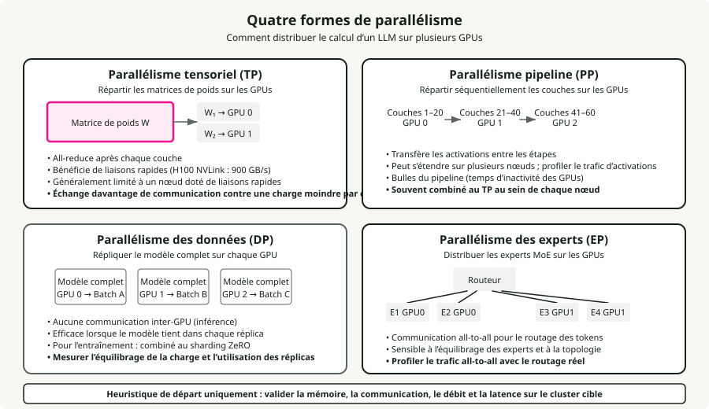
Le Tensor Parallelism (TP) découpe les matrices de poids individuelles entre GPUs et nécessite un all-reduce après chaque couche. Il demande la bande passante NVLink (900 GB/s sur H100) et fonctionne le mieux à l’intérieur d’un seul nœud. TP=2 ou TP=4 est courant ; aller plus haut offre des rendements décroissants à cause du surcoût de communication. En inférence, TP réduit la latence par requête en répartissant le calcul.
Le Pipeline Parallelism (PP) répartit séquentiellement les couches entre GPUs, en faisant passer les activations d’un stage au suivant. Les besoins en bande passante plus faibles le rendent praticable entre nœuds via InfiniBand, mais il introduit des bulles de pipeline (temps d’inactivité GPU). Schéma courant : Llama-405B utilise TP=8 à l’intérieur des nœuds et PP=2 entre nœuds.
Le Data Parallelism (DP) réplique le modèle complet sur chaque GPU. En inférence, c’est la stratégie de montée en charge la plus rentable : chaque réplique traite des requêtes indépendantes sans aucune communication inter-GPU. En entraînement, c’est l’axe principal de montée en charge, combiné à ZeRO pour sharder les états d’optimiseur.
L’Expert Parallelism (EP) distribue les experts MoE sur les GPUs via une communication all-to-all pour le routage des tokens. DeepSeek-V3 (671B total, 37B actifs, 256 experts) est typiquement déployé avec EP=8 par nœud. La communication all-to-all représente ~47 % de la latence de la forward pass même avec NVLink, ce qui en fait le principal goulot des MoE.
Cadre de décision sur le parallélisme :
- Le modèle tient sur 1 GPU : utiliser DP uniquement.
- Le modèle tient sur 1 nœud : utiliser TP dans le nœud + DP entre nœuds.
- Le modèle dépasse 1 nœud : utiliser TP + PP + DP.
- Mixture of Experts : ajouter EP à l’un des cas ci-dessus.
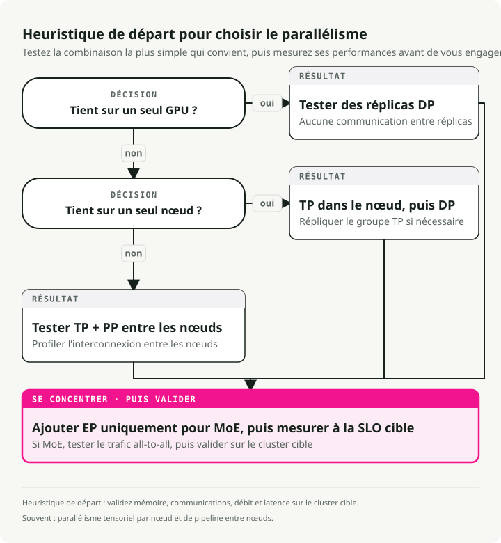
34. Comparaison des frameworks de serving
vLLM est le framework open-source le plus largement adopté, construit sur PagedAttention et continuous batching. Il offre le support modèle le plus large, une API compatible OpenAI, et supporte TP/PP/DP/EP. C’est un projet PyTorch Foundation avec la plus grande communauté.
SGLang égale ou dépasse vLLM dans de nombreux scénarios (jusqu’à 3.1x de throughput sur Llama-70B) grâce à RadixAttention pour la réutilisation de préfixes, un ordonnanceur CPU sans surcoût, et une génération structurée native. C’est le premier framework open-source à égaler le throughput d’inférence officiel de DeepSeek à grande échelle sur 96 H100.
TensorRT-LLM a la meilleure latence par requête (35–50 ms de TTFT) grâce à la fusion via CUDA graphs et à l’optimisation des kernels, avec support natif FP8/FP4. Le compromis est une courbe d’apprentissage plus raide, une dépendance à Docker et un verrouillage NVIDIA.
TGI (HuggingFace) s’intègre bien à l’écosystème HuggingFace et supporte plusieurs backends (NVIDIA, AMD, Intel). Début 2025, HuggingFace a placé TGI en mode maintenance.
Ollama vise les développeurs qui veulent accéder à des LLMs locaux en deux commandes. Pas optimisé pour le throughput de production.
llama.cpp est l’option portable C/C++ avec le support matériel le plus large (ARM, AVX, Metal, CUDA, ROCm, Vulkan). Le format GGUF supporte une quantization de 1.5 bit à 8 bits. L’inférence CPU fournit 3–45 tokens/s ; GPU (RTX 4090) atteint ~128 tokens/s sur Llama 8B Q4_K_M.
35. Sélection GPU pour l’inférence
Tarification et disponibilité des GPUs en mars 2026 :
| GPU | Mémoire | Bande passante | Précision native | TF32 TFLOPS | NVLink | Cloud $/h |
|---|---|---|---|---|---|---|
| B200 | 192 GB HBM3e | 8 TB/s | FP4, FP8, INT8 | ~4,500 (FP8) | 5.0 (1.8 TB/s) | ~$6.25 |
| H200 | 141 GB HBM3e | 4.8 TB/s | FP8, INT8 | 989 | 4.0 (900 GB/s) | $2.15-6.00 |
| H100 SXM | 80 GB HBM3 | 3.35 TB/s | FP8, INT8 | 989 | 4.0 (900 GB/s) | $1.49-3.90 |
| A100 SXM | 80 GB HBM2e | 2.0 TB/s | INT8, FP16 | 312 | 3.0 (600 GB/s) | $1.10-2.54 |
| L40S | 48 GB GDDR6 | 864 GB/s | FP8, INT8 | 362 (FP16) | Aucun | $0.80-1.50 |
| A10G | 24 GB GDDR6 | 600 GB/s | INT8, FP16 | 70 | Aucun | $1.00-1.50 |
| RTX 4090 | 24 GB GDDR6X | 1.0 TB/s | FP8, INT8 | 83 (FP32) | Aucun | ~$0.35/h |
H200 est actuellement le meilleur compromis pour les grands modèles. Ses 141 GB de mémoire permettent de faire tenir Llama 70B sur un seul GPU (ce qui demandait auparavant 2x H100), et sa bande passante de 4.8 TB/s donne jusqu’à 2x plus vite en inférence que le H100 sur Llama 2 70B. B200 marque un saut générationnel : support natif FP4, 192 GB HBM3e, et NVLink 5.0 à 1.8 TB/s. L’A10G est très utilisé en cloud (comme AWS G5) pour servir des modèles 7B–8B à cause de son ratio coût/performance. La RTX 4090 reste la reine du grand public avec un MSRP autour de ~$1,600.
Le support matériel natif de la quantization influence fortement les performances. AWQ et GPTQ (avec poids INT4) peuvent fonctionner efficacement sur n’importe quelle architecture en déquantifiant vers des registres FP16, mais la véritable accélération native via Tensor Cores dépend de la génération. Hopper (H100/H200) et Ada (L40S/4090) accélèrent nativement FP8, et Blackwell (B200) ajoute des Tensor Cores FP4 natifs pour de gros gains de throughput. Tous les GPUs listés supportent les opérations matricielles INT8.
Le decode LLM est memory-bandwidth-bound, donc la bande passante compte plus que les TFLOPS bruts pour la plupart des charges de serving. C’est pourquoi H200 surpasse H100 alors que leur architecture de calcul est identique.
36. Cascading de modèles et routage
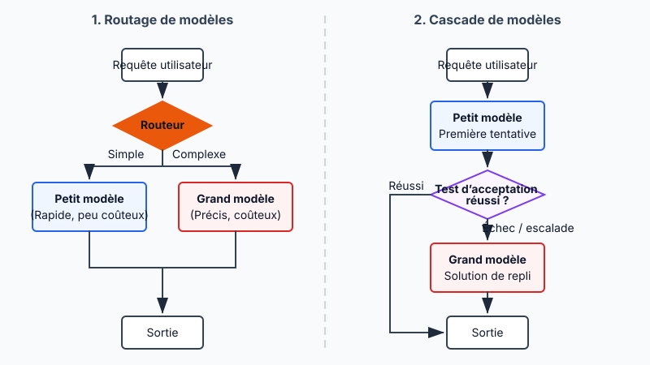
Le routage de modèles choisit quel LLM traite chaque requête en fonction de sa complexité prédite. RouteLLM (LMSYS/UC Berkeley, ICLR 2025) utilise des routeurs par factorisation matricielle entraînés sur les données de préférences de Chatbot Arena pour obtenir 85 % de réduction de coût sur MT-Bench tout en conservant 95 % de la qualité de GPT-4. L’économie tient toujours : un frontier model comme GPT-4o coûte ~\\(5.00/M tokens (mixte) contre un modèle ouvert rapide comme [Llama 3 8B](https://deepinfra.com/pricing/) à ~\\\)0.05/M, soit un écart d’environ 100x qui rend rentable même un routage imparfait.
Les architectures de routeurs vont de classifieurs BERT légers (~1–5 ms de surcoût) à des juges basés sur LLM. Le cascading est la variante séquentielle : une requête passe par une chaîne de modèles, en commençant par le plus rapide et le moins cher. Si une fonction de scoring décide que la génération n’est pas assez bonne, elle escalade vers le modèle suivant, plus coûteux. FrugalGPT a montré que ce genre de fallback séquentiel peut réduire les coûts d’inférence jusqu’à 98 % tout en égalant la performance du meilleur LLM individuel, ou augmenter la précision jusqu’à 4 % à coût égal. L’idée est que les modèles frontier coûteux ne sont utilisés que pour la queue difficile des requêtes qui en ont réellement besoin.
Partie VII — Applications
Les patterns applicatifs qui transforment des capacités brutes de modèle en systèmes utiles. Les embeddings alimentent la recherche, le RAG ancre les réponses dans une connaissance externe, les agents orchestrent des workflows multi-étapes, et le prompt engineering relie l’ensemble.
37. Embedding models vs generative models
Les embedding models encodent le texte en vecteurs de dimension fixe qui capturent le sens sémantique. Contrairement aux modèles génératifs decoder qui produisent des séquences de tokens, ils produisent un seul vecteur dense (768–4,096 dimensions) pour toute l’entrée. La plupart des embedding models utilisent des transformers encoder-only (attention bidirectionnelle) plutôt que des décodeurs. L’encodeur traite tous les tokens d’entrée en une fois et produit une représentation contextualisée pour chaque token. Une couche de pooling condense ensuite ces représentations token par token en un seul vecteur, généralement par mean pooling (moyenne de tous les embeddings de tokens) ou CLS pooling (utilisation de la sortie d’un token spécial de classification). Le modèle est ensuite fine-tuné avec de l’apprentissage contrastif : les textes sémantiquement proches sont rapprochés dans l’espace vectoriel, et les textes dissemblables sont éloignés.
Meilleurs embedding models (2025-2026) :
| Modèle | Dimensions | Architecture | Score MTEB |
|---|---|---|---|
| Qwen3-Embedding-8B | jusqu’à 4,096 | Basé décodeur (Qwen3) | 70.6% |
| Gemini Embedding 2 | 3,072 | Multimodal (texte/image/vidéo/audio) | 68.2% |
| pplx-embed-v1-4B | 2,560 | Basé décodeur (Qwen3), INT8/binaire natif | 69.7% |
| Voyage-3-large | 2,048 | Propriétaire | 66.8% |
| OpenAI text-embedding-3-large | 3,072 | Propriétaire | 64.6% |
Quelques tendances de la génération 2025–2026. Les meilleurs modèles utilisent désormais des backbones decoder-only (Qwen3, Mistral) avec attention bidirectionnelle et couches de pooling au-dessus, ce qui casse l’ancienne hypothèse encoder-only. L’embed pplx de Perplexity a introduit des embeddings quantifiés natifs : INT8 (réduction de stockage 4x) et binaire (réduction 32x) produits directement pendant l’inférence, sans perte de quantization post-hoc. Gemini Embedding 2 de Google est le premier modèle d’embedding nativement multimodal, mappant texte, image, vidéo et audio dans un espace vectoriel unifié.
Matryoshka Representation Learning (MRL, Kusupati et al., NeurIPS 2022) est la technique qui rend la dimension des embeddings flexible. Nommée d’après les poupées russes, MRL structure un embedding pour que ses \(m\) premières dimensions soient aussi informatives qu’un modèle de dimension \(m\) entraîné indépendamment. Pendant l’entraînement, au lieu de calculer une seule loss sur l’embedding complet, MRL calcule plusieurs losses en parallèle à des dimensions espacées logarithmiquement (64, 128, 256, 512, 1024, 2048, 3072). Toutes les losses sont agrégées et backpropagées ensemble, ce qui force le modèle à concentrer l’information sémantique la plus importante dans les dimensions de tête, chaque groupe de dimensions suivant ajoutant un niveau de détail plus fin. Du grossier au fin, comme des poupées emboîtées.
Après entraînement, on peut tronquer l’embedding à n’importe laquelle de ces dimensions entraînées en prenant un préfixe du vecteur. L’impact pratique est grand : le text-embedding-3-large d’OpenAI tronqué à seulement 256 dimensions dépasse l’ancien text-embedding-ada-002 sur ses 1,536 dimensions complètes sur MTEB. Une réduction 6x de la taille vectorielle avec une meilleure qualité, ce qui se traduit par 6x moins de stockage, 6x plus rapide pour la recherche par similarité, et 6x moins de coûts de base vectorielle sans réentraîner le modèle.
L’embedding model est le choix de composant le plus important dans un pipeline RAG. Il détermine la qualité de la récupération, qui fixe le plafond de la qualité de génération. Un mauvais embedding model ne peut pas être compensé par un meilleur LLM.
38. Architecture RAG en production
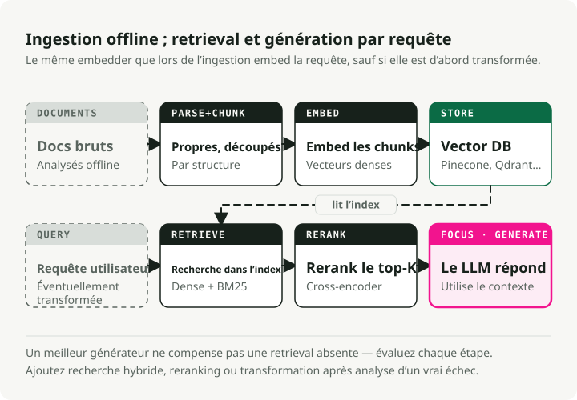
Retrieval-Augmented Generation ancre les réponses du LLM dans des connaissances externes en récupérant des documents pertinents au moment de la requête et en les injectant dans le contexte du prompt. Cela traite la limitation centrale des modèles purement paramétriques : leur connaissance est figée au moment de l’entraînement, et ils hallucinent lorsqu’on leur demande une information absente de leurs poids. Un système RAG de production est un pipeline multi-étapes, et chaque étape influe sur la qualité de la réponse finale.
Le pipeline d’ingestion tourne offline. Les documents bruts (PDF, HTML, Markdown, bases de données) sont d’abord parsés en texte propre, ce qui est plus difficile qu’il n’y paraît : le parsing PDF, à lui seul, peut perdre tableaux, en-têtes et mise en forme. Le texte est ensuite découpé en chunks, qui sont embeddings et indexés indépendamment.
La stratégie de chunking a un effet disproportionné sur la qualité de récupération. Trop petit (moins de ~100 tokens) et les chunks perdent du contexte ; trop grand (plus de ~512 tokens) et ils diluent la pertinence avec du contenu hors sujet. Les approches courantes sont le fixed-size avec overlap (256 tokens avec 10–15 % de chevauchement — simple et efficace), le recursive character splitting (découpe par paragraphe, puis phrase, puis mot — respecte les frontières naturelles), et le semantic chunking (regroupe les phrases par similarité d’embedding — meilleure qualité mais plus lent).
Chaque chunk est ensuite embeddings avec un modèle comme ceux de la Section 37 et stocké dans une base vectorielle (Pinecone, Weaviate, Qdrant, pgvector, etc.).
Le pipeline de récupération s’exécute au moment de la requête. Le RAG naïf (embed la requête, lance une seule recherche vectorielle, empile les résultats dans le prompt) n’apporte généralement pas la précision souhaitée dans les contextes enterprise. Le RAG de niveau production ajoute plusieurs couches supplémentaires pour réduire cet écart :
- Hybrid search combine récupération dense vectorielle (similarité sémantique) et récupération sparse comme BM25 (matching exact de mots-clés), fusionnées via Reciprocal Rank Fusion (RRF). La recherche dense est bonne sur les paraphrases sémantiques ("cost of living" correspond à "expenses"), et la recherche sparse capture les termes exacts que les embeddings manquent (IDs produit, codes erreur, acronymes). Hybrid search apporte une amélioration de précision de 15–30 % par rapport à une recherche purement vectorielle (Redis/Azure Benchmarks, 2024).
- Reranking fait passer les top-\(k\) chunks récupérés (généralement 20–50) par un modèle cross-encoder qui score la pertinence requête-document plus précisément que la similarité cosinus du bi-encoder initial. Le cross-encoder voit la requête complète et le document ensemble, ce qui permet un matching sémantique fin. Le reranking ajoute 23.4 % d’amélioration supplémentaire par rapport à hybrid search seule (Redis/Azure Benchmarks, 2024), au prix de 50–200 ms de latence additionnelle. Les top-\(n\) résultats rerankés (3–10) sont ensuite injectés dans le prompt du LLM. J’ai couvert le pipeline de recherche multi-étapes complet (BM25, reranking cross-encoder, pertinence pilotée par LLM) dans Building a Modern Search Ranking Stack.
- Query transformation réécrit la requête utilisateur avant la récupération pour améliorer le rappel. HyDE (Hypothetical Document Embeddings) demande au LLM de générer une réponse hypothétique, qui est ensuite embeddings et utilisée pour la récupération. Multi-query expansion génère plusieurs reformulations de la même question. Step-back prompting pose d’abord une question plus générale pour récupérer un contexte plus large.
Les modes d’échec courants :
- Retrieval failure — le bon document existe mais n’est pas récupéré. À corriger avec un meilleur chunking, hybrid search ou filtrage par métadonnées.
- Context poisoning — des chunks récupérés non pertinents induisent le LLM en erreur. À corriger avec du reranking et des seuils top-\(k\) plus stricts.
- Lost-in-the-middle — le LLM ignore le contexte pertinent placé au milieu d’un long prompt (Liu et al., 2024 a montré que les modèles prêtent surtout attention au début et à la fin de la fenêtre de contexte).
GraphRAG (Microsoft, 2024) augmente la recherche vectorielle par une traversée de graphe de connaissance. Pendant l’indexation, un LLM extrait entités et relations à partir des documents et construit un graphe qui capture des connexions multi-sauts invisibles à une recherche vectorielle plate. Au moment de la requête, GraphRAG parcourt ce graphe pour des requêtes fortement relationnelles comme "quels fournisseurs sont connectés aux deux entreprises ?", là où le RAG standard échoue. Le coût est un calcul d’indexation et un stockage bien plus élevés.
Décomposition typique de la latence end-to-end : embedding 5–20 ms, recherche vectorielle 10–100 ms, reranking 50–200 ms, génération LLM 200–2,000 ms (Milvus RAG Optimization Guide, AIMultiple Reranker Benchmarks, 2026). Les étapes de récupération n’ajoutent qu’environ 100–300 ms de surcoût, ce qui reste modeste comparé à la génération, mais leur impact sur la qualité de réponse est majeur : c’est la différence entre une hallucination et une réponse ancrée.
39. Architectures d’agents et tool calling
Les agents LLM utilisent les modèles comme moteurs de raisonnement qui planifient, invoquent des outils, observent les résultats, puis itèrent. Le choix d’architecture (comment l’agent raisonne et quand il agit) détermine coût, latence et fiabilité. Trois patterns de raisonnement couvrent la plupart des systèmes de production :
- ReAct — boucles Thought → Action → Observation. S’adapte en temps réel à mesure que chaque observation met à jour le raisonnement, mais l’historique s’accumule et doit être retraité à chaque étape, ce qui en fait le schéma le plus coûteux.
- ReWOO — planifie tous les appels d’outils en amont en une seule passe LLM en utilisant des placeholders (
#E1,#E2), les exécute (potentiellement en parallèle), puis synthétise. Jusqu’à 5x d’économie de tokens par rapport à ReAct, mais est « aveugle » pendant l’exécution : il ne peut pas se rattraper si un outil échoue tôt. - Plan-and-Execute — un planner génère un plan multi-étapes ; un exécuteur réalise chaque étape avec capacité de replanifier en cas d’échec. Permet la spécialisation des modèles (modèle fort pour planifier, modèle bon marché pour exécuter). Meilleurs taux de réussite sur les tâches complexes.
| Pattern | Coût tokens | Adaptabilité | Meilleur usage |
|---|---|---|---|
| ReAct | Élevé | Excellente — pivote en temps réel | Tâches exploratoires, debug, chat |
| ReWOO | Faible (~5x d’économie) | Faible — aveugle pendant l’exécution | Pipelines prévisibles, tableaux de bord |
| Plan-and-Execute | Moyen | Bonne — replanifie en cas d’échec | Analyse complexe, tâches de recherche |
Le function calling est le mécanisme que les agents utilisent pour invoquer des outils. Le function calling natif (supporté par GPT-4o, Claude, Gemini, Llama 3.1+) produit des invocations d’outils JSON structurées validées par rapport à un schéma fourni, avec des taux d’erreur bien plus faibles que le parsing basé texte. Le modèle voit les définitions d’outils comme une partie de son contexte et apprend à émettre des appels bien formés. Le parallel function calling (plusieurs outils dans une seule réponse) réduit les allers-retours pour les opérations indépendantes.
La structured output et le constrained decoding garantissent la conformité au schéma en modifiant la génération de tokens elle-même. Des moteurs comme xgrammar (utilisé dans vLLM et SGLang) appliquent des masques de grammaire à chaque étape de décodage et produisent du JSON 100 % valide avec un surcoût quasi nul. Schema-Guided Reasoning (SGR) va plus loin : comme les LLMs génèrent les champs séquentiellement, placer les champs d’analyse avant les champs de décision dans le schéma force le modèle à raisonner avant de décider. Trois patterns SGR couvrent la plupart des usages de production : Cascade (étapes séquentielles), Routing (types Union comme commutateurs sémantiques), et Cycle (listes bornées).
Pièges de production : la sélection d’outils se dégrade au-delà de ~15–20 outils disponibles, les agents multi-étapes prennent 5–30+ secondes, et les workflows complexes coûtent 10–50x plus de tokens que des solutions à prompt unique. La tendance 2024–2025 est aux approches hybrides : raisonnement ReAct avec function calling natif, orchestré par des frameworks comme LangGraph.
40. Prompt engineering pour la production
Le prompt engineering en production repose moins sur des astuces ingénieuses que sur une fiabilité systématique. Les techniques ci-dessous sont classées par impact. Les deux premières suffisent à elles seules à résoudre la plupart des problèmes de production.
Les few-shot examples sont la manière la plus fiable de contrôler le format de sortie. 3–5 exemples diversifiés couvrant les cas limites (entrées vides, requêtes ambiguës, réponses en plusieurs parties) améliorent fortement le respect du format et réduisent le besoin de post-traitement. Ce qui compte, c’est la diversité : les exemples doivent couvrir la distribution des entrées réelles, pas seulement le happy path. Les rendements décroissants apparaissent au-delà de 5 exemples, et chaque exemple consomme des tokens de contexte, donc la qualité prime sur la quantité.
Le prompting chain-of-thought (CoT) demande au modèle de raisonner étape par étape avant de répondre. Même le simple suffixe "Let's think step by step" améliore nettement la précision sur les tâches de mathématiques, logique et raisonnement multi-étapes (Kojima et al., 2022). Pour la production, le few-shot CoT (exemples incluant les étapes de raisonnement, pas seulement la réponse finale) est plus fiable que le zéro-shot. La self-consistency (Wang et al., 2023) génère plusieurs chemins CoT (température 0.5–0.7) et prend le vote majoritaire, ce qui réduit les erreurs aléatoires au prix d’appels d’inférence supplémentaires.
La structured output avec schémas JSON explicites (Section 39) supprime toute une classe d’échecs de parsing. Combinée à des moteurs de constrained decoding comme xgrammar, elle garantit une sortie 100 % valide avec un surcoût quasi nul. Pas de regex parsing, pas de boucle de retry.
Le prompt chaining décompose les tâches complexes en pipeline d’étapes ciblées : classifier l’intention → récupérer le contexte → générer une réponse → valider la sortie. Chaque étape est un prompt simple, testable, avec un seul objectif. Cette approche dépasse régulièrement les « mega-prompts » qui essaient de tout gérer en un seul appel, car chaque étape peut utiliser un modèle différent (classifieur bon marché, générateur coûteux), les échecs sont localisés et débogables, et les sorties intermédiaires peuvent être mises en cache et réutilisées. Le compromis est une latence supplémentaire liée à des appels LLM séquentiels ; réservez donc le chaining aux flux critiques en qualité.
La température contrôle l’aléa dans l’échantillonnage des tokens. Utilisez 0.0–0.2 pour les tâches déterministes (classification, extraction, génération de code) où la cohérence compte. Utilisez 0.7–1.0 pour les tâches créatives (rédaction, brainstorming) où la diversité est souhaitée. Évitez les températures supérieures à 1.0 en production ; les sorties deviennent incohérentes. La température interagit aussi avec top_p et top_k de manière peu intuitive ; dans la plupart des systèmes de production, fixer la température et laisser top_p à 1.0 suffit.
La séparation system vs user message compte plus que ne le pensent la plupart des équipes. Les system messages définissent le comportement persistant ("You are a medical coding assistant. Always cite ICD-10 codes."), et les user messages portent le contenu propre à la requête. Les modèles prêtent attention différemment aux system messages : ils définissent le cadre comportemental plutôt qu’ils n’ajoutent du contenu conversationnel. Mettez les contraintes fortes ("NEVER include patient names in output") dans le system message, car les modèles sont plus cohérents pour éviter des motifs spécifiques que pour suivre des instructions positives générales.
Le grand basculement de 2024–2025 est passé du « prompt engineering » au context engineering : l’attention s’est déplacée de la formulation d’instructions astucieuses vers l’assemblage dynamique des bonnes informations (documents récupérés, résultats d’outils, historique conversationnel, few-shot examples) dans le bon format et à la bonne position dans la fenêtre de contexte. Les modèles prêtent surtout attention au début et à la fin de leur contexte, donc placer les instructions critiques et le contenu récupéré le plus pertinent à ces positions apporte des gains de qualité mesurables. J’ai couvert ce changement dans Context Engineering for AI Agents.
Partie VIII — Opérations de production
Les préoccupations opérationnelles qui décident si votre système survit au trafic réel : rate limiting, modes de panne, monitoring, optimisation des coûts et planification de capacité.
41. Rate limiting pour des requêtes à coût variable
Le rate limiting traditionnel en requêtes par seconde suppose un coût à peu près égal par requête. Les LLMs cassent cette hypothèse. Un prompt de classification de 10 tokens et une analyse documentaire de 100K tokens frappent le même endpoint API mais diffèrent en coût de quatre ordres de grandeur. Limiter en RPS laisse soit passer les requêtes coûteuses sans contrôle, soit affame inutilement les requêtes bon marché.
Les systèmes de production ont besoin d’un rate limiting basé sur les tokens sur plusieurs dimensions. OpenAI impose des limites RPM (requests per minute) et TPM (tokens per minute) par niveau : GPT-5 Tier 1 commence à 500K TPM, jusqu’à 4M TPM en Tier 4. Anthropic est plus granulaire, avec des limites séparées ITPM (input tokens per minute) et OTPM (output tokens per minute), reflétant le fait que les tokens de sortie coûtent 3–5x plus cher à générer que les tokens d’entrée à traiter. Les deux utilisent l’algorithme du token bucket, qui reconstitue en continu la capacité au lieu de la réinitialiser à intervalles fixes.
Le schéma pratique de mise en œuvre est une hiérarchie de limites multi-dimensionnelle (utilisateur → application → organisation → global), avec des niveaux de priorité pour les accès premium. Au niveau requête, la technique importante est la réservation de budget de tokens : estimer le total de tokens (entrée + max_tokens) au moment de l’admission, déduire du bucket, puis ajuster à la fin de la requête selon l’usage réel. Cela évite qu’un pic de requêtes à longues générations n’épuise la capacité avant même qu’elles ne commencent à produire une sortie.
Pour les déploiements self-hosted, l’équivalent est le throughput provisionné : réserver de la capacité GPU dédiée pour garantir un débit de tokens. Anthropic et Amazon Bedrock proposent cela comme produit ; pour des déploiements vLLM, cela revient à configurer l’admission control en fonction des slots de decode actifs et de la pression sur le cache KV, plutôt qu’en simple nombre de requêtes. Le point rejoint la Section 5 : le throughput se mesure en tokens, pas en requêtes, donc le rate limiting doit aussi se faire ainsi.
42. Modes de panne à anticiper
Le serving LLM échoue de façons que les services web traditionnels ne connaissent pas. Connaître ces modes de panne (et concevoir les défenses avant d’arriver en production) est ce qui sépare les systèmes fiables des démos impressionnantes.
L’Out-of-Memory (OOM) est la panne la plus fréquente. Un modèle 70B en FP16 a besoin d’environ ~140 GB pour les seuls poids, et le cache KV pour une seule séquence en contexte 128K ajoute ~40 GB (Section 6). L’écart entre « tient en mémoire » et « OOM sous charge » est plus faible qu’il n’y paraît : un batch de 8 requêtes à long contexte peut consommer plus de mémoire en cache KV que les poids du modèle. La prévention commence avec le paramètre gpu_memory_utilization de vLLM (défaut 0.9 ; déploiements conservateurs 0.85–0.90) combiné à la quantization et à PagedAttention. Pour les charges à forte pression sur le cache KV, LMCache offloade le cache KV vers la mémoire CPU ou le disque et obtient une réduction de latence de 3–10x en augmentant la capacité effective de cache au-delà des limites mémoire GPU.
La préemption survient lorsque l’espace du cache KV est épuisé et que l’ordonnanceur doit évincer des requêtes actives pour faire de la place à de nouvelles. Dans vLLM, les requêtes préemptées sont recalculées depuis zéro plutôt que swappées vers le CPU (le recalcul est plus rapide pour la plupart des longueurs de séquence pratiques). Côté utilisateur, cela signifie que sa requête en cours redémarre silencieusement : le TTFT paraît normal, mais la latence end-to-end double ou triple. Surveillez attentivement les comptes de préemption. Une hausse des taux de préemption signifie qu’il vous faut plus de mémoire, des séquences plus courtes ou plus de répliques.
La tail latency explose lorsque de gros prefills monopolisent le GPU. Un seul prefill de 100K tokens peut bloquer les étapes de decode pour toutes les autres requêtes du batch. Le chunked prefill (Section 7) est la défense principale, avec une réduction P99 TBT de 54 %. La stratégie d’ordonnancement compte aussi : le scheduler Learning-to-Rank (NeurIPS 2024) prédit les longueurs de sortie relatives et approxime un ordre shortest-job-first, ce qui donne une réduction de latence moyenne de 6.9x par rapport à FCFS avec moins de 2 % de surcoût. Des systèmes d’ordonnancement conscients de la longueur comme CascadeInfer vont plus loin en partitionnant les instances en groupes spécialisés par longueur, réduisant le TTFT de queue de 56–62 %.
Les pannes en cascade suivent un schéma prévisible. Une requête lente (gros prefill ou longue génération) occupe un slot de decode, la profondeur de file augmente, les clients en amont atteignent leur timeout, les retries amplifient la charge de 2–3x, et tout le système se dégrade. Hiérarchie de prévention : admission control (rejeter les requêtes lorsque la file dépasse un seuil) → limites de concurrence par requête et plafonds max_tokens → circuit breakers au niveau de la gateway → pools de prefill/decode désagrégés (Section 7) pour que les requêtes dominées par le prefill ne puissent pas affamer les décodeurs.
43. Monitoring des systèmes LLM
Le monitoring LLM diffère du monitoring API traditionnel sur plusieurs points de base. Chaque requête a un coût variable, deux phases distinctes avec des goulots différents, et une empreinte mémoire qui dépend à la fois de la longueur d’entrée et de la longueur de génération. Les métriques standard comme la latence de requête et le taux d’erreur manquent l’essentiel.
La métrique que la plupart des équipes ne suivent pas est le goodput : le nombre de requêtes par seconde qui respectent tous les seuils SLO (TTFT, TPOT, latence totale). Le concept vient de la mesure de productivité ML de Google Cloud et est devenu la meilleure mesure unique de la santé du système. Le throughput brut peut sembler excellent alors que le goodput s’effondre : un système traitant 100 requêtes/seconde mais violant le SLO TTFT pour 40 % d’entre elles a un goodput de 60, et 40 % de vos utilisateurs vivent une mauvaise expérience. Optimiser le goodput vous oblige à regarder la distribution des performances, pas seulement la moyenne.
vLLM expose un endpoint Prometheus sur /metrics avec des métriques couvrant tout le cycle de vie du serving : vllm:num_requests_running et vllm:num_requests_waiting (pression de file), vllm:kv_cache_usage_perc (fraction de blocs du cache KV en usage — au-dessus de 90 % prédit une préemption imminente), histogrammes de longueur de génération, et taux de hit du prefix cache. La mise en place pratique est simple : Prometheus scrape /metrics (toutes les 1–5 secondes), Grafana visualise les dashboards, et OpenTelemetry avec Jaeger gère le tracing distribué sur les pipelines LLM multi-services.
Les alertes qui comptent, et pourquoi chaque seuil compte :
- Pics du nombre de préemptions — des requêtes sont évincées puis redémarrées ; les utilisateurs subissent un doublement silencieux de latence.
- Utilisation du cache KV >90 % — vous êtes à un batch de requêtes long contexte près d’une cascade de préemptions.
- Profondeur de file dépassant 2–3x votre taille de batch — l’admission control doit commencer à rejeter ou déprioriser.
- TTFT monte alors que TPOT reste plat — ce pattern de divergence signifie que le problème vient de la file ou du réseau, pas du calcul GPU. Les phases prefill et decode ont des goulots indépendants (Section 4), donc quand une seule métrique bouge, on sait immédiatement quel sous-système examiner. Ce seul diagnostic économise des heures de debug.
44. Optimisation des coûts : une stratégie composée
La tarification API actuelle (mars 2026) s’étend sur trois ordres de grandeur : GPT-4o à \(2.50/\)10.00 par million de tokens d’entrée/sortie contre Gemini Flash-Lite à \(0.075/\)0.30. La trajectoire est frappante. Une performance équivalente à GPT-4 coûte aujourd’hui $0.40/M tokens contre $20 fin 2022, avec des coûts qui diminuent d’environ 10x par an. Même sur cette courbe déflationniste, l’écart entre un déploiement naïf et un déploiement optimisé reste de 10–20x à un instant donné.
Remarquez l’asymétrie dans les prix de chaque fournisseur : les tokens de sortie coûtent 3–10x plus que les tokens d’entrée. GPT-4o facture $10/M en sortie contre $2.50/M en entrée (4x). Claude Sonnet 4 facture $15/M en sortie contre $3/M en entrée (5x). Cela vient du fait que les tokens de sortie nécessitent des étapes de decode séquentielles (Section 7) alors que les tokens d’entrée sont traités en parallèle. Donc optimiser la longueur de sortie (structured outputs, génération contrainte, system prompts concis) offre plus de levier qu’optimiser la longueur d’entrée.
La stratégie gagnante empile plusieurs approches, et les effets se composent multiplicativement :
- Quantization (FP16 → INT4) réduit de 75 % la mémoire de serving, ce qui permet des batches plus grands et une réduction de coût opérationnel de 60–70 % (Section 9).
- Model routing envoie 70 % du trafic vers des modèles moins chers. Cas réel : facture mensuelle passant de $42K à $29K (Maxim AI Case Study, 2024) en ajustant la capacité du modèle à la complexité de la requête (Section 36).
- Prompt caching économise jusqu’à 90 % sur les charges avec préfixes partagés. Anthropic facture 0.1x le prix de base pour les lectures en cache, et les tokens en cache ne comptent même pas dans les limites ITPM (Section 16).
- Les Batch APIs offrent 50 % de remise pour le travail non temps réel (évaluations, génération de données synthétiques, classification en masse).
- Le self-hosting devient rentable à partir d’environ >2M tokens/jour, mais l’analyse de seuil de rentabilité est trompeuse. Un budget GPU de $5K/mois devient facilement $25K dès qu’on ajoute le temps d’ingénierie, le surcoût d’infrastructure, l’astreinte, et une utilisation sous-optimale comparée aux fournisseurs qui amortissent sur des milliers de clients.
Empilez ces facteurs de façon conservatrice : quantization (0.3x) × routing (0.7x) × caching (0.5x) × batching (0.5x) = ~0.05x, soit une réduction de 95 % par rapport à la baseline naïve. Toutes les charges ne sont pas éligibles à toutes les optimisations, mais même un empilement partiel donne 5–10x d’économies.
Le coût caché qui ruine les calculs de self-hosting : l’ingénierie ML représente 70–80 % du coût total de déploiement, pas le calcul (TrueFoundry / MLOps Reports, 2024). La facture GPU n’est que la partie visible de l’iceberg.
45. Planification de capacité et autoscaling
La planification de capacité pour le serving LLM diffère des services web traditionnels sur trois points. Le coût des requêtes varie sur plusieurs ordres de grandeur (une requête de 100 tokens et une de 100K tokens frappent le même endpoint). Le decode est un processus séquentiel long, pas un cycle rapide requête-réponse. Et la contrainte principale est la mémoire, pas le calcul. Se tromper sur un seul de ces points, c’est soit payer des GPUs inactifs, soit perdre des requêtes sous charge.
Le plafond dur sur les requêtes concurrentes est le budget mémoire du cache KV, pas les FLOPS :
Pour un modèle Llama 3 70B en INT4 (~35 GB) sur un H100 80 GB, il reste environ 40 GB pour le cache KV. Avec GQA et un contexte moyen de 4K, chaque séquence nécessite ~160 MB de cache KV, ce qui donne ~250 séquences concurrentes. À 128K de contexte, cela chute à ~5 séquences par GPU. C’est pourquoi la sélection du GPU et l’optimisation du cache KV pilotent directement votre plan de capacité.
La formule de capacité pour dimensionner la flotte :
Le détail important est « au SLO cible ». Un seul H100 peut sortir 2,000+ tokens/seconde si la latence n’importe pas, mais seulement 400–800 tokens/seconde tout en maintenant un TTFT P99 sous 500 ms. Benchmarkez toujours à vos vrais SLO, pas aux maximums théoriques.
Les signaux d’autoscaling doivent être repensés. L’utilisation GPU est presque inutile comme signal de scaling parce qu’elle reste élevée même quand le système est surchargé : le GPU est toujours occupé, qu’il traite sainement les requêtes ou qu’il s’effondre en préemptions. De meilleurs signaux sont la profondeur de file (mesure directe d’une demande supérieure à la capacité), l’utilisation du cache KV (prédit la préemption avant qu’elle n’arrive — scale up à 80 %, pas à 95 %), et la dégradation du goodput (les violations de SLO sont la vérité terrain indiquant que la capacité est insuffisante). Ce sont les métriques de la Section 43.
Pour les environnements de développement et de staging, le scale-to-zero est la bonne économie. Les instances GPU coûtent $2–4/heure ; un environnement de staging qui tourne 24/7 coûte $1,500–3,000/mois pour un seul GPU. Les plateformes d’inférence serverless et les autoscalers basés sur Kubernetes (comme KEDA avec métriques personnalisées) peuvent ramener les instances à zéro pendant les périodes d’inactivité et cold-start en 30–60 secondes, ce qui est acceptable hors production. Le compromis est le temps de chargement du modèle (30–60 secondes pour un modèle 70B), ce qui rend le scale-to-zero impraticable pour les objectifs de latence de production mais réduit la dépense GPU hors production de 80–90 %.
Le système interconnecté
Ces 45 concepts ne forment pas une collection lâche. Ils constituent un système connecté. La taille du cache KV détermine la taille de batch, la taille de batch détermine l’intensité arithmétique, l’intensité arithmétique contrôle si le decode est memory-bound, ce qui pilote le TPOT, et le TPOT définit le throughput. GQA réduit le cache KV, ce qui permet des batches plus grands, ce qui augmente l’intensité arithmétique, ce qui améliore l’utilisation GPU. FlashAttention exploite l’écart de bande passante entre SRAM et HBM. Continuous batching résout l’utilisation du calcul mais crée de la fragmentation mémoire, ce que PagedAttention résout. Chunked prefill co-ordonnance du travail compute-bound et memory-bound ; le modèle roofline explique pourquoi cette complémentarité fonctionne.
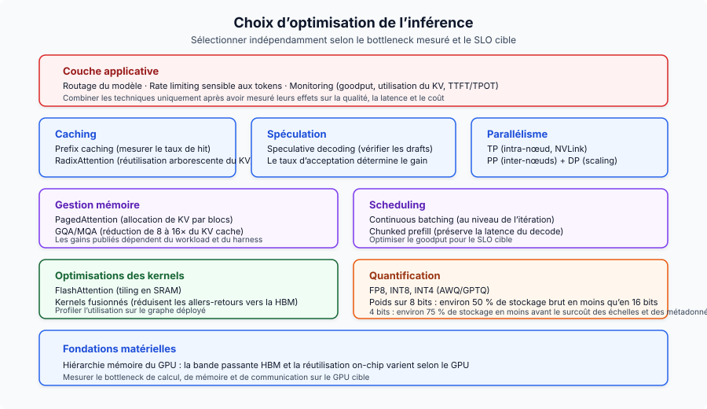
Côté entraînement, le piège Chinchilla a fait passer le domaine de « train big » à « train small and long » (Llama 3 8B à 1,875 tokens par paramètre). GRPO a supprimé la charge mémoire à quatre modèles de PPO, ce qui a rendu faisable le raisonnement de DeepSeek-R1. La distillation à partir du chain-of-thought de R1 s’est révélée plus efficace que l’application directe du RL à des modèles plus petits, et cela a changé la façon dont on construit les systèmes compacts de raisonnement.
Le méta-pattern : les coûts d’inférence baissent d’environ 10x par an alors que les capacités augmentent. Les équipes qui traitent l’optimisation d’inférence comme une vraie discipline d’ingénierie (routing, caching, quantization, matériel bien dimensionné) accumulent des avantages dans un marché où le plancher de coût continue de descendre.
Principes clés
- L’inférence LLM a deux phases distinctes. Le prefill est compute-bound, le decode est memory-bandwidth-bound. Chaque optimisation cible l’une ou les deux.
- Le cache KV est le goulot central. Sa taille détermine la capacité de batch, la pression mémoire, et en fin de compte le throughput. GQA, PagedAttention et quantization l’attaquent tous.
- La hiérarchie mémoire GPU pilote tout. L’écart 10x de bande passante entre SRAM et HBM explique FlashAttention, kernel fusion et pourquoi le decode est memory-bound.
- Continuous batching + PagedAttention donnent ensemble un throughput 23x supérieur au serving naïf. Incontournable en production.
- Chinchilla-optimal n’est pas optimal pour l’inférence. Le domaine s’est déplacé vers le surentraînement massif de plus petits modèles (1,875 tokens/paramètre pour Llama 3 8B).
- GRPO et la distillation ont refaçonné l’alignement. DeepSeek-R1 a montré que GRPO + récompenses vérifiables + distillation battent l’application directe du RL à des modèles plus petits.
- L’optimisation des coûts se compose. Empiler quantization, routing, caching et batch APIs donne une réduction de coût de 5–10x par rapport à un déploiement naïf.
- La bande passante compte plus que les TFLOPS pour le serving. H200 surpasse H100 à calcul identique, uniquement grâce à la bande passante mémoire.
Pour aller plus loin
Autres deep-dives de ce blog, organisés par sujet :
- LLM Fine-Tuning Guide — quand faire du fine-tuning vs RAG vs prompt engineering
- Open-Source LLM Variants and File Formats — associer variantes de modèles et formats quantifiés au matériel
- LoRAX Serving Guide — servir des milliers d’adapters LoRA en production
- Scaling Large Language Models — stratégies multi-GPU et multi-nœuds
- Local LLMs on macOS — mise en place pratique avec llama.cpp et Ollama
- AI Agent Reasoning Loops in 2026 — deep dive sur ReAct, ReWOO et Plan-and-Execute
- AI Agent Memory Architecture in 2026 — checkpoints, vector stores et mémoire documentaire pour agents stateful
Références
Organisées par domaine ; numéros de section entre crochets.
Inférence et attention
- FlashAttention: Fast and Memory-Efficient Exact Attention with IO-Awareness - Dao et al., NeurIPS 2022
- FlashAttention-2: Faster Attention with Better Parallelism and Work Partitioning - Dao, 2023
- FlashAttention-3: Fast and Accurate Attention with Asynchrony and Low-precision - Shah et al., NeurIPS 2024
- Flash-Decoding for long-context inference - Dao et al., 2023
- Efficient Memory Management for Large Language Model Serving with PagedAttention - Kwon et al., SOSP 2023
- Orca: A Distributed Serving System for Transformer-Based Generative Models - Yu et al., OSDI 2022
- GQA: Training Generalized Multi-Query Attention - Ainslie et al., 2023
- Triton: an intermediate language and compiler for neural network computations - Tillet et al., MAPL 2019
- FlashNorm: Fast Normalization for LLMs - 2024
- Deep Kernel Fusion for Transformers - DeepFusionKernel, 2026
Speculative Decoding
- EAGLE-3: Scaling up Inference Acceleration of Large Language Models - Li et al., NeurIPS 2025
- Medusa: Simple LLM Inference Acceleration Framework with Multiple Decoding Heads - ICML 2024
Quantization
- AWQ: Activation-aware Weight Quantization for LLM Compression and Acceleration - Meilleur article MLSys 2024
- GPTQ: Accurate Post-Training Quantization for Generative Pre-trained Transformers - Frantar et al., ICLR 2023
- Marlin: Mixed-Precision (FP16xINT4) LLM Inference Kernel - Frantar et al., 2024
Entraînement et fine-tuning
- LoRA: Low-Rank Adaptation of Large Language Models - Hu et al., ICLR 2022
- QLoRA: Efficient Finetuning of Quantized LLMs - Dettmers et al., NeurIPS 2023
- ZeRO: Memory Optimizations Toward Training Trillion Parameter Models - Rajbhandari et al., SC20
- ZeRO-Infinity: Breaking the GPU Memory Wall for Extreme Scale Deep Learning - Rajbhandari et al., 2021
- Self-Instruct: Aligning Language Models with Self-Generated Instructions - Wang et al., ACL 2023
- WizardLM: Empowering Large Language Models to Follow Complex Instructions - Xu et al., ICLR 2024
- Phi-4 Technical Report - Microsoft, 2024
- AI models collapse when trained on recursively generated data - Shumailov et al., Nature 2024
Alignement
- Direct Preference Optimization: Your Language Model is Secretly a Reward Model - Rafailov et al., NeurIPS 2023
- DeepSeekMath: Pushing the Limits of Mathematical Reasoning in Open Language Models - Introduction de GRPO
- DeepSeek-R1: Incentivizing Reasoning Capability in LLMs via Reinforcement Learning - DeepSeek, 2025
Mise à l’échelle et architecture
- The Llama 3 Herd of Models - Meta, 2024
- LLaMA: Open and Efficient Foundation Language Models - Touvron et al. (Meta), 2023
- Llama 2: Open Foundation and Fine-Tuned Chat Models - Touvron et al. (Meta), 2023
- Qwen3 Technical Report - Qwen Team (Alibaba), 2025
- Training Compute-Optimal Large Language Models - Hoffmann et al. (Chinchilla), NeurIPS 2022
- RoFormer: Enhanced Transformer with Rotary Position Embedding - Su et al., 2021
- YaRN: Efficient Context Window Extension of Large Language Models - Peng et al., ICLR 2024
- SGLang: Efficient Execution of Structured Language Model Programs - Zheng et al., NeurIPS 2024
- Mixtral of Experts - Jiang et al. (Mistral AI), 2024
Embeddings
- Matryoshka Representation Learning - Kusupati et al., NeurIPS 2022
- pplx-embed-v1: Diffusion-Pretrained Dense and Contextual Embeddings - Perplexity AI, 2026
Architectures d’agents
- ReAct: Synergizing Reasoning and Acting in Language Models - Yao et al., ICLR 2023
- ReWOO: Decoupling Reasoning from Observations for Efficient Augmented Language Models - Xu et al., 2023
- Plan-and-Solve Prompting: Improving Zero-Shot Chain-of-Thought Reasoning by Large Language Models - Wang et al., ACL 2023
Routage
- RouteLLM: Learning to Route LLMs with Preference Data - Ong et al., ICLR 2025
Benchmarks
- MLPerf Inference v5.0 Results - MLCommons, avril 2025
Architectures de serving
- SARATHI: Efficient LLM Inference by Piggybacking Decodes with Chunked Prefills - Agrawal et al., 2023 (Chunked Prefill)
- Splitwise: Efficient Generative LLM Inference Using Phase Splitting - Patel et al., ISCA 2024 (Serving désagrégé)
- DistServe: Disaggregating Prefill and Decoding for Goodput-optimized Large Language Model Serving - Zhong et al., OSDI 2024 (Serving désagrégé)
Frameworks de serving
- vLLM - moteur de serving basé sur PagedAttention
- SGLang - RadixAttention et génération structurée
- TensorRT-LLM - inférence optimisée NVIDIA
- llama.cpp - inférence portable C/C++
- DeepSpeed - bibliothèque Microsoft d’entraînement distribué
- Ollama - exécuteur local de LLM
Opérations
- Efficient LLM Scheduling by Learning to Rank - Fu et al., NeurIPS 2024 (vLLM-LTR)
- CascadeInfer: Low-Latency and Load-Balanced LLM Serving via Length-Aware Scheduling - 2024
- Goodput metric as measure of ML productivity - Google Cloud, 2024
- vLLM Optimization and Tuning - documentation vLLM
- vLLM Metrics - documentation vLLM
- LMCache: KV Cache Management for LLM Serving - offloading du cache KV
- OpenAI Rate Limits - documentation API OpenAI
- Anthropic Rate Limits - documentation API Anthropic